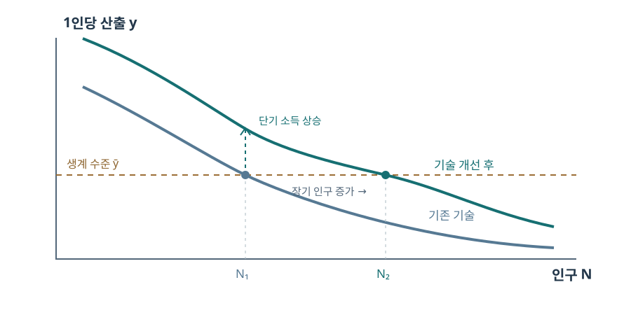

인구: 생존, 이동, 성장
인구는 산출을 나누는 분모이면서 노동, 수요, 전염과 이주의 주체다. 출생·사망·이동의 회계식에서 시작해 장기 성장과 세계적 인구 이동을 분석한다.
인구를 경제사의 출발점으로
인구는 1인당 생산을 계산하는 분모이자 생산을 담당하는 노동력이다. 소득과 보건의 개선은 생존을 늘리고, 살아남은 세대는 훗날 노동·저축·소비를 바꾼다. 토지가 고정된 농업에서는 같은 인구 증가가 노동자당 토지를 줄일 수도 있다. 강의는 출생·사망·이동을 나누어 측정한 뒤, 토지·기술·자본과 함께 변할 때의 1인당 생활수준을 설명한다.
인구경제학의 범위
인구경제학은 출산·생존·이주가 경제적 제약에 어떻게 반응하는지 묻는다. 가구는 소득과 양육비를 고려해 자녀 수와 교육을 결정하고, 영양·보건 환경은 사망 위험을, 임금 격차와 이동비용은 이주를 바꾼다. 강의에서 말한 ‘경제학 제국주의’는 선택과 유인이라는 경제학의 분석 방법을 인구 같은 주제로 확장한 흐름을 가리킨다. 역사에서는 혼인 규칙과 여성의 권리처럼 선택의 범위를 정하는 제도도 함께 조사한다.
인구를 경제학으로 연구하면 사회학·인구학의 설명은 필요 없어지나?
같은 도시의 출생률 하락에도 여러 경로가 있다. 주거비 상승은 자녀 양육의 기회비용을 높이고, 혼인 연령 상승은 출산 가능한 기간을 줄이며, 가임연령 여성의 비중 감소는 개인별 출산 행동이 같아도 전체 출생률을 낮춘다. 경제학은 이 경로들의 예측을 모형으로 비교한다. 인구학은 연령별 출산과 사망을 분해하고, 역사학은 혼인 규범과 호적의 기록 방식을 확인한다. 행동의 변화와 인구 구성·자료 정의의 변화를 가려낼 때 세 접근이 만난다.
맹자의 인구 문제
《맹자》에서 양혜왕은 흉년 때 하내의 사람을 하동으로 옮기고 곡식을 반대로 보내는데도 이웃 나라보다 백성이 늘지 않는다고 묻는다. 맹자는 50보를 달아난 군사가 100보를 달아난 군사를 비웃는 비유로 응급 구휼의 작은 차이를 자랑하는 태도를 지적한다. 이어 농번기의 동원과 생업의 조건을 바꾸고, 가구가 먹고 입고 노인을 부양할 수 있게 해야 한다고 말한다. 인구경제사에서는 이 사례를 당장의 구휼·지역 이동과 지속적인 생계 조건이 만든 장기 인구 반응을 나누어 읽는다. 《맹자·양혜왕 상》 원문과 번역.
오십보백보는 흉년 때 사람과 곡식을 옮겨도 소용없다는 뜻인가?
사람 1,000명이 하내에서 하동으로 옮기면 두 지역을 합한 인구는 그대로지만, 구휼이 사망을 줄이면 다음 해 전국 인구는 더 많아질 수 있다. 이동은 지역별 분포, 구휼은 생존, 평소의 통치는 장래의 출생과 이주에 작용한다. 맹자의 비유는 왕의 비교 대상이 작은 구휼의 차이에 머문다는 지적이다.
분모로서의 인구
1인당 GDP는 총산출 \(Y\)를 인구 \(N\)으로 나눈 \(y=Y/N\)이다. 총량은 국가의 세수·군사력과 관련되고, 1인당 수치는 평균 생활수준에 더 가깝다. 이 평균에는 소득분배와 비시장 가사노동이 드러나지 않는다. 총산출과 인구가 함께 늘 때 1인당 수치의 방향은 두 성장률을 비교해 판단한다.
성장률을 차근차근 계산하기
\(y=Y/N\)의 양변에 로그를 취하면 \(\ln y=\ln Y-\ln N\)이다. 시간을 따라 미분할 때 \(d\ln x/dt=\dot x/x\)이므로 \(g_y=g_Y-g_N\)을 얻는다. 연도별 자료의 정확한 이산식은 \(1+g_y=(1+g_Y)/(1+g_N)\)이다. 예를 들어 총산출이 3%, 인구가 2% 늘면 1인당 성장률은 \(1.03/1.02-1\approx0.98\%\)다. 1%라는 뺄셈은 작은 성장률에서 유용한 근사다.
경제원론에서는 인구를 주어진 값으로 두기도 하는데, 경제사에서는 왜 인구 변화 자체를 설명하나?
외생변수는 모형 밖에서 주어지고, 내생변수는 모형 안의 행동·제약으로 결정된다. 단기 산출 모형에서는 인구를 고정해도 유용하다. 수세기를 보면 임금과 식량이 혼인·출산·생존을 바꾸고, 늘어난 인구가 노동 공급과 노동자당 토지를 다시 바꾼다. 그래서 장기 경제사에서는 \(N\)을 내생화한다. 뒤의 맬서스 모형은 기술 상승 → 소득 상승 → 인구 증가 → 노동자당 토지 감소를 따라간다. 현대 저출산을 설명할 때에는 교육·돌봄 비용과 여성의 노동시장 기회처럼 달라진 제약을 넣는다.
per capita의 여러 의미
1인당 산출·소득·소비는 모두 인구 \(N\)으로 나누지만 분자가 다르다. 국내에서 만든 부가가치 \(Y\)의 일부가 해외 소유자에게 돌아가면 국민소득과 GDP가 달라지고, 산출 증가분이 투자·군사비로 쓰이면 가계 소비가 같은 폭으로 늘지 않는다. 취업자당 생산성 \(Y/L\)과 1인당 GDP의 관계는 \(Y/N=(Y/L)(L/N)\)이다. 노동자당 생산성이 같아도 아동·노인의 비중과 취업률이 달라지면 1인당 GDP가 달라진다. 생활수준에는 가계 소비와 소득분배도 함께 필요하다.
인구가 늘었다는 사실만으로 생산과 1인당 소득을 예측할 수 있나?
인구 \(N\) 가운데 몇 명이, 얼마나 오래 일하며, 시간당 얼마를 생산하는지를 분리한다. 총 노동시간을 \(H\), 취업자를 \(E\), 경제활동인구를 \(\mathrm{LF}=E+U\), 15세 이상 인구를 \(W\)라 두자. \(U\)는 실업자다. 분자·분모에 \(H,E,\mathrm{LF},W\)를 차례로 곱했다 나누면
가 된다. 다섯 항은 차례로 시간당 생산성, 취업자당 노동시간, 경제활동인구의 취업 비율, 경제활동참가율, 15세 이상 인구 비중이다. 예컨대 각 항이 \(2\)만 원/시간, \(40\)시간/주, \(0.9\), \(0.6\), \(0.8\)이면 \(Y/N=34.56\)만 원/인·주다. 시간 단위를 맞춘 뒤 곱해야 한다. 이 식은 총인구가 같아도 고용·연령 구조에 따라 1인당 산출이 달라지는 회계적 분해다. 각 항이 왜 변했는지는 별도의 인과 분석이 필요하다. 통계청 경제활동인구조사의 정의.
맬서스와 고전파의 갈림길
1798년 《인구론》에서 맬서스는 식량 생산의 제약과 인구 반응이 장기 1인당 식량을 압박할 수 있다고 보았다. 리카도는 질이 다른 토지의 경작 확대와 수확체감이 지대·임금·이윤의 분배를 어떻게 바꾸는지에 집중했다. 계보에서 맬서스와 케인스가 연결되는 지점은 생산능력이 있어도 총수요가 부족할 수 있다는 관심이다. 인구가 식량을 압박하는 장기 기제와 유효수요가 생산을 제한하는 단기 기제는 시간 범위와 작동 변수가 다르다.
학파 계보를 사용할 때
학파 계보의 가지는 공유한 질문과 서로 다른 답을 연결하는 지도다. 중상주의는 국가의 무역·재정을, 중농주의는 농업의 순생산과 경제 순환을, 고전파는 생산·분배의 장기 법칙을, 신고전파는 제약 속의 한계 선택을 중시했다. 뒤의 학파가 앞선 문제를 모두 해결했다는 뜻은 아니다. 토지·인구 제약은 신고전파 이후에도 연구 대상이며, 각 시대의 기술·정치·자료가 어떤 질문을 앞세웠는지 살펴야 계보를 읽을 수 있다.
맬서스 함정의 직관
맬서스의 대비에서 인구는 매 기간 같은 비율로 증가해 \(N_t=N_0(1+g)^t\), 식량은 같은 양씩 늘어 \(F_t=F_0+at\)가 된다. 두 식을 오래 연장하면 1인당 식량에 압력이 생긴다. 경제학적 기제는 고정 토지 아래 노동 증가 → 노동자당 생산 감소 → 생존·출산 반응이다. 농업 기술, 교역, 농지 확장, 출산 행동이 달라지면 두 식의 가정과 장기 결과도 바뀐다.
기하급수·산술급수의 차이가 1인당 식량에서 어떻게 드러나는가?
1인당 식량은 \(f_t=F_t/N_t=(F_0+at)/[N_0(1+g)^t]\)다. 예를 들어 처음 \(F_0=N_0=100\), 인구 증가율 \(g=0.02\), 식량 증가량 \(a=1\)이면 50년 뒤 식량은 150, 인구는 \(100(1.02)^{50}\approx269\)로 1인당 식량은 처음의 약 0.56배다. 분자는 해마다 일정량씩, 분모는 커진 인구에 같은 비율을 적용하므로 두 증가 방식의 차이가 누적된다. 이것은 인구 증가율과 식량 증가량을 50년간 고정한 사고실험이다. 이어지는 생산함수 모형은 식량을 산술급수로 고정하지 않고 토지 대비 노동이 늘 때 산출이 어떻게 변하는지 설명한다.
생산함수로 보는 함정
단기 충격에서 장기 균형까지
고정된 토지 \(T\)와 노동 인구 \(N\)으로 \(Y=A T^\alpha N^{1-\alpha}\)를 생산한다고 하자(\(0<\alpha<1\)). 인구로 나눈 평균 산출은 \(y=Y/N=A(T/N)^\alpha\)다. \(T,A\)가 그대로일 때 \(\ln y=\ln A+\alpha\ln T-\alpha\ln N\)이므로 인구가 1% 늘면 1인당 산출은 약 \(\alpha\)% 감소한다. 추가 노동자 한 명의 한계생산도 \(\partial Y/\partial N=(1-\alpha)y\)로 인구가 많을수록 낮아진다. 이 모형은 모든 사람을 노동자로 묶어 쓰므로 아동·노인의 비중이 바뀌는 경우에는 실제 노동 투입을 따로 넣어야 한다.
기술 \(A\)가 한 번 개선되면 같은 인구에서 \(y\)가 먼저 오른다. 소득 증가가 출생·생존을 높이고 장기적으로 인구 변화가 멈추는 소득을 \(\bar y\)라 두면 \(\bar y=A(T/N^*)^\alpha\)다. 이를 \(N^*\)에 관해 풀면 \(N^*=T(A/\bar y)^{1/\alpha}\). 일회성 기술 개선 → 일시적 1인당 소득 상승 → 더 큰 균형 인구가 된다. 지속적인 기술 진보나 낮은 출산율에서는 이 결론이 달라진다.
모형의 생산성 $A$에는 무엇이 들어가며 역사 자료에서는 어떻게 추정하나?
\(A\)는 같은 토지와 노동에서 얻는 산출을 묶은 항이다. 종자·관개·경작법의 개선은 물론, 노동을 더 잘 조정하는 제도도 산출을 높이면 이 단순 모형의 \(A\)에 들어간다. 생산함수에서 역으로 풀면 \(A=Y/(T^\alpha N^{1-\alpha})\)이므로 산출과 투입을 같은 범위로 측정해야 한다. 예를 들어 토지 면적만 같고 한 지역의 토질이 좋다면 관찰된 \(A\)가 높아 보여도 순수한 기술 격차라고 해석할 수 없다. 노동시간·토질·자본이 식에서 빠져 있을 때도 그 차이는 \(A\)에 섞인다. 장기 자료의 \(A\) 추정은 특정 발명의 효과를 직접 측정한 값보다, 모형에 넣은 투입으로 설명하고 남은 산출의 차이에 가깝다.

인구 회계식
한 기간의 인구 변화는 \(\Delta N=B-D+M_{\mathrm{in}}-M_{\mathrm{out}}\)이다. \(B-D\)는 자연증가, \(M_{\mathrm{in}}-M_{\mathrm{out}}\)는 순이동이다. 도시 인구가 1,000명 늘었어도 출생 1,500명·사망 500명으로 늘었다면 보육 수요가, 순유입 1,000명으로 늘었다면 이주자의 연령에 따른 주택·일자리 수요가 먼저 달라진다.
국가 인구를 합할 때 국내 지역 간 이동은 상쇄된다. 국경 간 이동은 남는다. 호적이나 주민등록에서 빠진 출생·이주가 있다면 기록상 변화와 실제 변화를 나누어 추정해야 한다. 회계식을 적용하기 전에 지역 경계, 거주 기준, 관측 기간을 고정한다.
조출생률과 조사망률
조출생률 \(b=1000B/\bar N\)와 조사망률 \(d=1000D/\bar N\)는 보통 연평균 인구 \(\bar N\) 천 명당 사건 수(‰)다. 조율(crude rate)은 연령·성별 구성을 조정하기 전의 전체 평균이다. 고령자 비중이 높으면 같은 나이에서의 사망 위험이 낮아도 조사망률은 높을 수 있다. 위험 자체를 비교하려면 연령별 사망률이나 공통 연령 구성을 적용한 표준화율을 쓴다. 출생률도 가임연령 여성의 비중에 영향을 받으므로 여성 한 사람당 출산 지표와 구분한다.
출생·사망률의 범위
슬라이드의 출생률 50‰는 높은 출산력으로 알려진 후터라이트 집단을 참고한 조출생률의 교육용 상한이고, 사망률 30‰는 전근대 사회를 비교할 때 쓰는 대표적 수준이다. 두 값은 특정 사회의 고정된 법칙이 아니다. 혼인 연령, 모유 수유, 산모 건강, 피임과 아동 생존이 출생을 바꾸고, 전염병·전쟁과 연령 구조가 사망을 바꾼다. 두 조율 모두 그해 전체 인구 천 명당 사건 수이므로 여성 한 명의 평생 출생아 수와 단위를 구분해야 한다.
한 여성이 생애에 낳을 수 있는 자녀 수와 연간 조출생률 50‰를 왜 곧바로 연결할 수 없나?
조출생률의 분모는 그해 모든 연령의 남녀 인구, 생애 출산 지표의 분모는 가상의 한 여성이 거치는 연령별 출산 경험이다. 인구 1,000명에서 그해 50명이 태어나면 조출생률은 50‰다. 가임연령 여성 200명이 있었다면 그해 여성 1명당 출생은 \(50/200=0.25\)명이지만, 평생 출생아 수를 얻으려면 연령별 출산율을 생애에 걸쳐 합해야 한다. 후터라이트의 과거 출생 이력은 출산 조절이 적었던 집단의 패턴을 보여 주며, 시대에 따라 그 패턴도 변했다. 한편 조사망률 30‰는 연간 천 명당 30명, 즉 3%다. 후터라이트 출생 이력을 이용한 연구 · 이후 출산 변화 연구.
자연증가율의 단위
조출생률 50‰에서 조사망률 30‰를 빼면 자연증가는 천 명당 20명, 즉 \((50-30)/1000=0.02\) 또는 연 2%다. 순이동이 없고 이 비율이 일정하면 \(N_t=N_0(1.02)^t\)다. 인구가 두 배가 되는 기간은 \((1.02)^t=2\)의 양변에 로그를 취해 \(t=\ln 2/\ln 1.02\approx35\)년으로 계산한다. 역사에서는 두 율과 순이동이 해마다 달라지므로 35년은 일정한 2% 성장률이라는 가정의 결과다.
적극적 억제와 예방적 억제
맬서스의 두 조정 경로는 인구 회계식의 서로 다른 항에 작용한다. 적극적 억제(positive check)는 식량 부족과 질병으로 사망 \(D\)가 늘어나는 경로, 예방적 억제(preventive check)는 혼인 연기·독신·출산 조절로 출생 \(B\)가 줄어드는 경로다. ‘적극적’은 사망률을 통해 인구 증가를 억제한다는 당시의 분류 용어다. 이후 그래프는 소득 \(y\)에 따라 출생률 \(b(y)\)와 사망률 \(d(y)\)가 어떻게 움직이는지, 그리고 \(b(y)=d(y)\)인 소득이 어디인지 보여 준다. 교점에서 인구의 자연증가율은 0이지만 인구 규모까지 읽을 수는 없다.
사망률이 균형을 정할 때
그림에서 조출생률(CBR)은 50‰로 수평하고, 조사망률(CDR)은 소득이 높을수록 낮다. 가로축의 \(W_{\mathrm{positive}}\)는 두 율이 만나는 소득이다. 그보다 오른쪽에서는 출생이 사망보다 많아 인구가 증가한다. 토지와 기술이 일정하면 한 사람에게 돌아가는 토지가 줄어 소득이 왼쪽으로 움직인다. 왼쪽에서는 사망이 출생보다 많아 반대 방향으로 움직인다. 이 두 방향이 교점의 안정성을 설명한다.
사망률 하락은 영양·주거 개선이 생존에 미치는 영향을 단순화한 것이다. 실제 인구의 반응에는 혼인·출산까지의 시간차, 연령 구조와 지역 간 식량 교역이 끼어든다. 그래프는 그런 요인을 고정하고 사망률을 통한 복귀 경로만 떼어 보여 준다.
일시적 소득 증가의 반응
좋은 작황처럼 한 번의 충격으로 소득이 \(W_{\mathrm{positive}}\)에서 그림의 \(W^*\)로 오르면 CBR 50‰, CDR 30‰가 되어 자연증가는 연 2%다. 인구가 즉시 두 배가 되는 뜻은 아니다. 살아남은 아이가 노동연령에 이르는 동안 노동자당 토지가 점차 줄고, 그에 따라 소득과 두 율도 변한다. 2%를 35년 동안 고정해 얻는 배증 기간은 슬라이드 13의 비교 기준일 뿐, 이 조정 경로의 예측값은 아니다.
작황 개선은 사라지는 충격이고, 기술의 일회성 향상은 새 생산성 수준을 남긴다. 후자의 경우에도 맬서스 모형에서는 인구가 늘어 높아진 소득을 흡수하고, 장기에는 더 많은 인구를 부양한다. 기술이 계속 성장한다면 생산성 향상이 인구 증가를 앞질러 1인당 소득도 오를 수 있다.
출생 행동이 바뀌면
이번 그림에는 소득이 낮을 때 혼인을 미루는 반응을 더한다. 새 CBR 곡선은 소득과 함께 올라가다 50‰에서 수평해진다. 기존의 \(W_{\mathrm{positive}}\)에서는 새 출생률이 50‰보다 낮고 사망률은 그대로이므로 인구가 감소한다. 노동자당 토지가 늘면서 소득이 오른쪽으로 이동하고, 새 CBR과 CDR이 만나는 \(W_{\mathrm{preventive}}\)에서 멈춘다. 두 교점의 차이는 낮은 소득에서 출생이 감소한 효과다.
이는 사회 전체의 소득과 출생률 사이를 그린 도식이다. 실제로는 혼인 연령과 혼인한 여성의 출산 간격, 영아 생존, 연령별 여성 인구가 각각 조출생률을 바꾼다. 역사 자료에서 예방적 억제를 찾으려면 이 구성 요소를 분리해 살펴야 한다.
예방적 억제가 사망을 늘리지 않고 균형 소득을 높이는 과정을 식으로 볼 수 있을까?
슬라이드 9의 \(y=A(T/N)^\alpha\)에서 \(T,A\)를 고정하면 \(\Delta\ln y=-\alpha\Delta\ln N\)이다. 순이동을 제외하고 두 조율을 천 명당 수치로 쓰면 한 기간의 인구 증가율은 근사적으로 \(\Delta\ln N\approx[b(y)-d(y)]/1000\)이다. 두 식을 합치면
옛 교점에서 \(b=d=50\)‰였다가 만혼으로 \(b=40\)‰가 되면 초기 인구 변화는 약 \(-1\%\), 소득 변화는 약 \(+\alpha\%\)다. 이후 소득 상승에 따라 그림의 \(b\)는 오르고 \(d\)는 내려가 둘이 같아진다. 이 식은 이동 방향을 보여 준다. 새 균형 소득의 크기를 계산하려면 출생·사망 곡선의 기울기와 생산함수의 \(\alpha\)가 추가로 필요하다.
근대적 경제성장의 탈출
근대적 경제성장의 핵심은 인구가 늘어도 1인당 산출이 지속적으로 증가하는 현상이다. 슬라이드 9의 생산함수를 로그 미분하면 \(g_y=g_A+\alpha g_T-\alpha g_N\)이다. 토지가 고정되어 \(g_T=0\)이면 \(g_y=g_A-\alpha g_N\). 예를 들어 \(\alpha=0.4\), 인구가 연 1% 증가해도 생산성이 매년 1% 향상되면 1인당 산출 성장률은 약 \(1-0.4=0.6\%\)다. 기술·조직·인적자본의 개선이 토지의 희석 효과를 앞지르는 경우다.
여기에 출산율 하락과 교육 투자가 결합하면 인구 증가율 \(g_N\)과 노동자 한 명의 생산성이 함께 변한다. 그래서 실제 탈출 시점을 찾을 때에는 총산출과 인구의 장기 추세, 가구의 출산 행동, 노동 투입의 질을 나란히 보아야 한다. \(g_Y>g_N\)이라는 관측은 탈출의 결과를, 위 식의 생산성과 인구 반응은 가능한 기제를 보여 준다.
세계경제사 그래프의 축
영국·프랑스·독일·미국·일본의 소득선이 서로 다른 시점과 속도로 상승하는 그림은 언제 성장의 기울기가 바뀌었는가, 나라 사이의 격차가 왜 커졌는가를 묻는다. 세로축의 ‘1’은 전근대의 도식적 기준이며 고대의 정확한 국민계정 관측치가 아니다. 로그축 여부, 구매력 환산, 드문 옛 관찰값 사이의 보간에 따라 기울기의 인상이 달라진다. 나라별 전환 시점은 기술 이전·교육·제도와 시장 접근을 조사해 확인하고, 평균 소득의 상승이 모든 집단에 같은 때에 돌아갔는지도 별도로 살펴야 한다.
경기순환과 추세
그림의 매년 오르내리는 선은 경기변동, 완만한 선은 장기추세다. 흉작이나 전염병 뒤 생산이 회복되면 전년 대비 성장률이 높아도 예전 수준으로 돌아가는 중일 수 있다. 실제로 한 해 10% 감소한 뒤 다음 해 10% 증가하면 원래 수준의 \(0.9\times1.1=0.99\), 즉 99%다. 새 기술이 지속적으로 확산되면 추세의 기울기 자체가 변한다. 시작·끝 연도의 특이한 충격과 물가 환산을 확인해 추세를 추정하되, 긴 평균에 가려지는 당시 사람들의 위기 경험도 함께 기록해야 한다.
거대한 분기의 뜻
Great Divergence는 유라시아의 선도 지역들이 언제부터 서로 다른 성장 경로를 밟았는지 묻는 논쟁이다. 시점을 가리려면 두 지역의 초기 소득 수준과 이후의 성장률을 구분한다. 석탄 접근성, 신대륙 자원, 제도와 기술은 각 지역의 생산비와 시장 규모를 바꾸는 후보 기제다.
슬라이드는 사회 내부의 소득 격차와 사회 사이의 평균 소득 격차를 대비한다. 두 격차는 분모와 비교 대상이 다르며 내부 격차의 역사적 경로도 나라와 시기에 따라 달랐다. ‘국가 간 약 50:1’은 선택한 국가와 시점에 따라 변하는 대략적인 규모 표현이다. 전근대 비교에서는 국가 평균과 함께 상업 중심지의 실질임금·식품 소비·노동시간을 본다. 임금이 같아도 물가와 가족 노동시간이 다르면 생활수준이 달라지므로 비교 단위와 소비 묶음을 먼저 맞춘다. 아래 질문은 이 원칙을 영국과 중국의 강남에 적용한다.
중국 전체와 영국을 비교할까, 강남과 영국을 비교할까?
대분기 논의에서 수업은 중국의 강남처럼 생산성이 높은 지역을 따로 볼 필요를 강조한다. 중국 전체 평균에는 기후·토지·교역 조건이 크게 다른 지역이 섞인다. 그렇다고 중국의 가장 부유한 지역과 영국의 전국 평균만 비교하면 표본 선택이 결과를 바꿀 수 있다. 국가 대 국가의 총량·평균 비교와 핵심 상업 지역 대 핵심 상업 지역의 비교를 각각 제시해야 한다. 실질임금을 쓰더라도 쌀과 빵의 가격, 가족 노동시간, 주거비와 소비 묶음을 맞춰야 생활수준의 의미가 비슷해진다. 어느 쪽이 먼저 풍요로웠는가와 이후 어느 쪽의 성장률이 오래 높았는가는 서로 다른 질문이다. 1800년 무렵 두 지역의 수준이 비슷하다는 주장이 참이어도 산업화가 이후의 기울기를 달리했다면 장기 격차는 커질 수 있다.
한국의 장기 1인당 소득
그림은 1911–2015년 한국의 2010년 가격 1인당 GDP를 만원 단위의 수준으로 표시한다. 높이는 그해의 실질 소득 수준, 두 점의 높이 차이는 일정 기간의 절대 증가량이다. 성장률은 그 차이를 출발 수준으로 나눈 값이다. 예를 들어 100에서 110으로 오른 경우와 1,000에서 1,010으로 오른 경우는 모두 10만 원 늘었지만 성장률은 각각 10%와 1%다. 로그 세로축에서는 같은 비율의 증가가 같은 높이 차이로 보인다.
전환 시점을 읽을 때에는 식민지기 국민계정 추정과 전후 통계가 어떤 가격 기준·인구 범위로 이어졌는지 확인한다. 시계열의 굴곡은 교육·토지·산업 기반과 정책, 전쟁과 국제 수요가 함께 작용한 결과일 수 있다. 그래프에서 언제 성장률이 오래 높아졌는지를 먼저 확인하고, 원인은 관련 자료와 비교 사례로 따로 검증한다.
사망 충격의 여러 유형
흑사병과 천연두는 병원체, 유럽의 소빙기는 기후, 아일랜드 감자 기근은 식량 공급을 통해 인구에 충격을 주었다. 조선의 호열자(콜레라)도 이동망을 따라 퍼진 질병의 사례다. 충격이 사망·출생·이주 가운데 어느 항을 먼저 바꾸는지에 따라 장기 결과가 달라진다. 맬서스 모형에서는 인구 감소가 노동자당 토지를 늘리지만, 실제 재난은 가축·자본·교역망도 훼손할 수 있다. 임금의 변화를 설명할 때에는 남은 노동자 수와 함께 생산 수단의 손실을 계산한다.
전염병을 외생충격이라고 부르면 지역별 사망률도 무작위로 결정되나?
먼 곳에서 유입된 병원체는 한 지역의 그해 임금 결정 밖에서 생긴 충격일 수 있다. 그러나 지역별 노출과 사망은 인구밀도·영양·교역로·격리 능력의 영향을 받는다. 지역 \(i\)의 피해를 \(D_i=f(S_i,X_i)\)로 쓰면 \(S_i\)는 병원체 노출, \(X_i\)는 기존의 사회·경제 조건이다. \(X_i\)가 이후 임금에도 영향을 준다면 피해 지역과 비피해 지역의 임금 차이에는 두 효과가 섞인다. 비교 연구에서는 유행 전 임금 추세와 교역·이동 경로를 확인해 이 차이를 좁힌다.
현대 전염병과 역사 비교
슬라이드는 1918년 인플루엔자부터 SARS, MERS, COVID-19, 엠폭스까지 여러 유행병을 나열한다. 역사 비교에서는 누가 감염되고 사망했는지, 학교·일터·이동이 얼마나 중단됐는지, 당시 의료·정보 체계가 무엇을 할 수 있었는지를 맞춰 본다. 예를 들어 노동연령 인구의 사망은 당장의 노동 공급을, 어린이의 학교 중단은 훗날의 인적자본을 바꿀 수 있다. 연령·지역 기준을 맞춘 초과사망과 생산·돌봄 손실을 나란히 놓으면 병원체와 대응 방식의 차이가 경제 효과로 이어지는 경로가 드러난다.
흑사병의 경제사적 위치
14세기 중엽 흑사병은 노동이 토지에 비해 갑자기 희소해진 사례다. 생존 노동자의 협상력이 커지면 임금이 오를 수 있고, 지주는 경작지를 목축지로 바꾸거나 노동자의 이동·임금을 제한하려 할 수 있다. 따라서 결과를 읽는 순서는 사망 충격 → 노동·토지의 상대적 희소성 → 계약과 권력의 반응 → 실제 임금·지대다. 이전의 인구 압력과 장원 의무, 도시 시장의 발달 정도가 지역별 결과를 갈랐다.
페스트의 시기와 이름
슬라이드는 1346–1369년의 역병을 pest, plague, Black Death라는 말로 소개한다. 중세의 pest와 plague는 큰 전염병을 가리키는 넓은 표현이었고, Black Death는 14세기의 대유행을 지칭하는 후대의 역사적 명칭이다. 이름의 ‘흑’을 피부 반점에 연결하는 설명이 있어도, 명칭 자체가 병원체를 판정해 주지는 않는다. 오늘날에는 당시의 사망 기록과 유골에서 얻은 Yersinia pestis 유전 증거를 함께 사용한다. 명칭의 역사 · 병원체의 고대 DNA 연구.
1346–1369년은 어느 한 지역에서 질병이 중단 없이 지속된 기간을 뜻하지 않는다. 지역별 유입 시점과 재유행이 달랐고, 사망 규모를 추정하는 사료도 지역마다 다르다. 이후의 인구·임금 변화를 비교할 때에는 각 지역이 언제 충격을 받았는지를 먼저 맞춘다.
옛 문헌의 ‘페스트’ 기록을 모두 같은 병원체의 사례로 셀 수 있나?
당시의 질병 이름은 현대의 실험실 진단명과 일치하지 않는다. 문헌에서 증상과 사망 시기·지역을 확인하고, 가능하면 매장 유골의 고대 DNA와 대조한다. 유전 증거가 확보된 표본은 병원체 식별에 강하지만 모든 사망자를 대표하지는 않는다. 따라서 역병으로 기록된 사망자 수와 Y. pestis로 확인된 표본 수를 구분해 쓴다.
기원에 관한 사료의 한계
슬라이드는 중국 또는 인도를 기원 후보로 적지만, 가장 이른 현존 기록의 장소와 병원체가 분화한 장소, 유럽에 들어온 경로는 서로 다른 질문이다. 유럽 기록의 양이 많으면 특정 지역이 최초 감염지처럼 보일 수도 있다. 사료의 작성 시기와 당대 지명, 교역로, 동물 숙주와 고대 DNA를 함께 대조해야 확산 경로를 좁힐 수 있다. ‘동양에서 왔다’는 한 방향의 서술만으로 최초 발생지를 정할 수 없다.
카파에서 유럽으로
흑해의 카파는 제노바 상인과 유라시아 교역망이 만나는 항구였다. 슬라이드는 1346년 카파에서 1348년 영국까지 이어지는 전파 연대를 제시한다. 선박의 도착과 항구별 첫 사망 기록을 맞춰 보면 접촉망을 따른 확산의 시간 순서를 복원할 수 있다. 지도는 경로를 보여 주고, 각 지역의 사망률은 별도의 인구 기록으로 추정한다. 당시 전국 인구조사가 없었으므로 ‘영국 인구 절반 사망’ 같은 수치에는 추정 범위가 따른다.
빠른 확산과 오랜 재유행
1347년 무렵 시작한 유럽의 첫 유행은 약 다섯 해에 걸쳐 넓게 퍼졌고, 이후에도 여러 지역에서 재유행했다. 첫 도달 속도는 교역망의 연결을, 재유행 간격은 인구 회복의 어려움을 보여 준다. 출생과 이주로 노동력이 회복되는 중에 다시 사망 충격이 오면 노동의 희소성과 임금·지대의 조정이 오래 이어진다. 지역별 추세를 비교할 때에는 첫 유입 연도와 후속 유행의 시점·규모를 함께 기록한다. 유럽의 재유행을 다룬 경제사 연구.
첫 유행이 끝난 뒤에도 인구가 쉽게 회복되지 않는 이유를 숫자로 볼 수 있나?
설명을 위해 인구를 100, 첫 유행 뒤 인구를 70으로 놓자. 출생에서 평상시 사망을 뺀 순증가율이 매년 1%라면 10년 뒤에는 \(70(1.01)^{10}\approx77.3\)이 된다. 그때 인구의 10%가 사망하는 재유행이 오면 약 \(77.3(0.9)=69.6\)으로 돌아간다. 실제 역사 수치가 아니라 회복 중의 반복 충격을 보여 주는 계산이다. 연령별 사망과 이주, 출생률 변화까지 포함하면 지역별 경로는 더 달라진다.
유럽의 흑사병 전파 지도
지도는 카파와 콘스탄티노플, 지중해 항구를 지나 서유럽·북유럽으로 이어지는 1346–1352년의 첫 도달 순서를 그린다. 1347–1348년 남유럽 항구, 1349년 영국과 북유럽 도시의 표시를 따라가면 해상 교역망과 이동이 전파의 통로였을 가능성이 보인다. 화살표는 사망 기록을 바탕으로 한 경로의 재구성이며, 벼룩·사람 사이의 전파 비중이나 도시별 사망률은 다른 자료로 추정한다.
생물학전 이야기의 검증
카파 포위군이 시신을 성안으로 던졌다는 전승은 전쟁과 역병을 연결한다. 이 사건이 유럽 대유행의 경로를 설명하려면 투척 → 성내 감염 유지 → 제노바 선박의 이동 → 다른 항구의 감염이라는 중간 단계가 성립해야 한다. 전승을 기록한 시기와 선박·항구의 연대, 설치류·벼룩·사람 사이의 가능한 전파 경로를 함께 검토한다. 한 사건의 사실 여부와 대륙 규모 확산에 대한 기여는 별개로 추정해야 한다.
증상 묘사의 용도
수도사의 몸에 그려진 검붉은 반점은 당대의 질병 인식을 전한다. 같은 증상이 다른 질병에도 나타날 수 있으므로 병원체 식별에는 여러 증상 기록과 유골의 고대 DNA를 함께 쓴다. 사망 규모에는 매장·유언장·세금·가구 기록이 더 직접적인 단서다. 그림의 제작 시점과 목적을 확인하면 당시 사람들이 무엇을 보았다고 여겼는지와 실제 사망률을 추정하는 일을 분리할 수 있다.
공동묘지와 사망 규모
1349년 투르네의 공동묘지 그림은 평소의 매장 능력을 넘는 사망을 시각화한다. 사망 규모는 그림 속 관의 수보다 매장부·가구·세금 기록으로 추정한다. 이때 빈민의 누락과 계절별 집중을 고려해야 한다. 노동시장 효과를 살피려면 사망자 수에 더해 생존자의 연령과 숙련도 알아야 한다. 같은 비율로 인구가 줄어도 농업과 도시 수공업의 노동 공급은 다르게 변할 수 있다.
유대인 박해와 위기 대응
1349년 투르네의 화형 장면은 유대인에게 질병의 책임을 돌린 박해의 기록이다. 공포와 거짓 정보, 지역 권력이 결합하면 희생양을 찾는 폭력이 생기고, 생명·재산의 손실과 거래·신용망의 붕괴로 이어진다. 이 사례는 전염병의 경제 효과가 직접적인 노동 손실과 사회적 반응이 만든 추가 손실로 갈라짐을 보여 준다. 지역별 임금과 회복을 비교할 때에도 이런 제도적 피해를 함께 본다.
채찍파의 행진
1349년 네덜란드의 채찍파 행진은 역병을 죄와 참회의 문제로 해석한 집단적 고행을 보여 준다. 원인에 대한 믿음은 시간과 고통이라는 비용을 감수한 행동을 낳고, 집회·이동은 주변 사람에게 영향을 준다. 경제사는 당시 사람들이 가진 정보와 선택 가능한 대응을 복원한 뒤, 그 행동이 이동과 공동체 관계에 남긴 결과를 분석한다. 그림은 운동의 존재를 보여 주며 참여 규모는 다른 사료로 확인한다.
교역과 질병의 공동 확산
흑사병을 유럽·아시아·아프리카의 연결망에서 보면 교역의 편익과 감염 외부효과가 함께 보인다. 상인은 상품 이동의 이익을 얻지만, 접촉으로 생긴 감염 비용 일부는 거래 밖의 주민이 부담한다. 검역·항구 통제는 그 비용을 줄이려는 대응이며, 이동을 제한하는 동안 잃는 식량·의약품·소득도 고려해야 한다. 어느 노선이 실제 전파에 얼마나 기여했는지는 항구의 유입 시점과 이동 기록으로 추정한다.
흑사병과 유라시아 교역로
갈색 화살표는 흑사병의 확산을 재구성한 경로, 붉은 선은 이븐 바투타, 초록 선은 마르코 폴로의 여행로다. 세 경로가 지중해·중앙아시아의 결절점에서 겹치면 장거리 이동의 가능성을 확인할 수 있다. 여행자들이 역병을 직접 운반했다는 기록으로 읽기 위해서는 여행과 유행의 연도, 접촉, 감염을 확인하는 별도 증거가 필요하다. 지도는 연결망의 구조를 설명하는 출발점이다.
대륙별 인구의 장기 변화
표의 단위는 100만 명이다. 1340년에서 1400년 사이 세계 인구 추정치는 4억 4,200만 명에서 3억 7,500만 명으로, 유럽은 7,400만 명에서 5,200만 명으로 줄었다. 유럽의 감소율은 \((52/74-1)\times100\approx-29.7\%\)다. 같은 기간 아메리카는 3,200만 명에서 3,900만 명으로 추정되어 모든 지역이 같은 방향으로 움직이지는 않았다. 표를 보면 세계 총량과 지역별 경로를 동시에 비교할 수 있다.
1340년과 1400년 사이에는 흑사병 외에도 전쟁·기근·이주가 있었다. 이 표의 수치는 지역 전체를 60년 간격으로 복원한 추정치이므로 질병별 사망자 수를 바로 계산할 수는 없다. ‘소련’ 열은 해당 시대에 존재한 국가의 인구가 아니라 후대 소련 영토에 해당하는 지역을 묶은 지리적 범주로 읽는다.
1340년 세계 인구 442에서 1400년 375로 줄었다면 흑사병 사망자는 6,700만 명인가?
두 추정치의 차이인 6,700만 명은 순인구 감소다. 그 60년 동안 태어난 사람, 다른 원인의 사망, 지역 경계와 추정 방식의 변화가 모두 들어 있다. 흑사병만의 사망 규모를 구하려면 유행 전후의 지역별 사망 기록과 평상시 출생·사망을 따로 추정해야 한다. 표의 숫자는 충격의 세계적 규모를 가늠하는 출발점이다.
천연두와 신대륙
아메리카의 천연두는 새로운 병원체에 대한 이전 노출과 면역 경험의 차이가 큰 인구 충격을 낳을 수 있음을 보여 준다. 피해 규모는 감염과 함께 전쟁, 강제노동, 식량 공급의 붕괴에도 영향을 받았다. 예를 들어 경작할 노동시간이 줄면 영양이 나빠지고 같은 감염도 더 치명적일 수 있다. 다음 슬라이드에서는 병원체의 전파 경로와 식민 지배가 만든 생존 조건을 나누어 확인한다.
총과 균을 함께 보기
슬라이드의 ‘피사로의 168명 대 잉카의 수만 명’은 정복자의 작은 규모를 강조한다. 승패에는 총포와 말, 현지 동맹군, 잉카 제국 내부의 정치, 감염병에 따른 인구·조직의 손실이 결합했다. 질병으로 인구가 줄면 노동·식량·조세와 방어 능력도 함께 흔들릴 수 있다. 사건별로 이 요인들이 작동한 시점과 상대적 크기를 살펴야 한다.
수업에서 든 호주의 토끼는 사람이 옮긴 외래종이 현지 생태계와 농업에 영향을 준 별도의 사례다. 천연두·홍역은 사람 사이의 접촉으로 전파됐다. 두 현상 모두 대륙 간 이동에서 시작하지만 숙주와 피해가 생기는 경로가 다르다.
호주에 옮겨 간 토끼 때문에 아메리카에서 천연두와 홍역이 퍼졌다는 뜻인가?
1859년 호주에 들여온 토끼가 야생에서 빠르게 번식해 식생·농업·토양에 피해를 주었다. 이는 외래종의 생태·경제 충격이다. 천연두와 홍역은 사람을 숙주로 하는 병원체가 사람의 접촉망을 따라 아메리카에 퍼진 경우다. 대륙 간 이동이 공통 출발점이어도 실제 기제는 각각 확인해야 한다. CSIRO의 호주 토끼 확산 설명.
원주민 인구 감소에서 질병과 강제노동의 효과를 따로 더하기만 하면 되나?
두 경로는 서로 영향을 주었을 수 있다. 16세기 멕시코를 기록한 모톨리니아는 천연두·홍역뿐 아니라 전쟁 뒤 기근, 조공 징수, 금 채굴과 도시 재건을 위한 강제노동을 함께 열거했다. 자가 경작에 쓸 노동시간이 줄면 식량 생산과 영양이 악화되어 같은 감염의 사망 위험이 커질 수 있다. 반대로 유행병으로 일손이 줄면 남은 사람에게 부과된 노동·조세 부담이 무거워질 수 있다. 따라서 전체 인구 손실을 ‘질병 사망 + 강제노동 사망’이라는 서로 독립적인 두 상자에 기계적으로 넣으면 상호작용과 출생 감소를 놓친다. 이 동시대 기록은 가능한 경로를 제시하지만 각 원인의 기여율을 계산한 통계는 아니다. 지역별 유행 시점·부역·식량 공급 자료가 더 필요하다. 동시대 기록을 검토한 리비-바치의 연구.
멕시코 중부 인구 표
표는 1532년과 1608년 사이의 멕시코 중부 인구를 고원·해안으로 나눠 천 명 단위로 제시한다. 합계는 1532년 16,871천 명에서 1608년 1,069천 명으로 줄어든다. 감소율은 \((1,069/16,871-1)\times100\approx-93.7\%\)로 계산할 수 있다. 왼쪽의 인구 수준과 오른쪽의 구간별 연간 인구 증가율은 서로 다른 열이다. 예컨대 1532–1548년 합계의 연 -6.2%와 이후의 -4.3%는 감소 속도가 변했음을 보여 준다.
해안과 고원의 경로도 같지 않다. 1532–1548년 해안의 연 -8.1%가 고원의 -5.4%보다 가파르지만, 왜 그런지는 질병 노출, 전쟁, 강제노동, 이동과 기록 범위를 살펴야 한다. 이 표의 정확한 기초 인구와 연간 율은 역사적 재구성에 의존한다. 따라서 큰 규모의 붕괴라는 방향은 분명히 읽되, 특정 병원체 하나가 전체 감소를 설명한다거나 모든 지역이 같은 비율로 줄었다고 결론 내리지 말자.
1532년 16,871천 명에서 1548년 6,300천 명이면 왜 표에는 연 -6.2%라고 적혀 있나?
두 시점은 16년 떨어져 있다. 표의 수치는 연간 로그 변화율 \(r=[\ln N_{1548}-\ln N_{1532}]/16\)으로 재현된다. 합계에 대입하면 \(r=\ln(6300/16871)/16\approx-0.0616\), 즉 연 -6.16%를 한 자리로 반올림한 -6.2%다. 반면 매년 같은 비율로 줄어든다고 쓸 때의 복리 변화율은 \(g=(6300/16871)^{1/16}-1=e^r-1\approx-0.0597\), 즉 약 -5.97%다. 둘은 서로 모순되지 않는다. \(N_{1548}=N_{1532}e^{16r}=N_{1532}(1+g)^{16}\)이라는 같은 인구 경로를 표현하는 두 방식이다. 연 -6.2%에 16을 곱해 전체 감소율 -99.2%라고 계산하면 복리 효과를 빠뜨린다. 실제 두 시점의 총감소율은 \(6300/16871-1\approx-62.7\%\)다.
표에서 인구가 급감했다는 사실만으로 천연두 사망자 수를 계산할 수 있나?
계산할 수 없다. 1532년과 1548년의 인구 차이는 그 기간의 모든 출생·사망·순이동과 집계 범위 변화가 합쳐진 결과다. 인구 회계식으로는 \(N_{1548}-N_{1532}=B-D+I-E\)이며, 여기서 \(D\)에도 천연두뿐 아니라 다른 질병, 폭력, 영양 악화에 따른 사망이 들어간다. 관찰된 감소 \(16{,}871-6{,}300=10{,}571\)천 명을 그대로 천연두 사망자로 부르면, 그동안 태어난 사람과 다른 원인의 사망·이동을 모두 무시한다. 질병별 사망을 추정하려면 감염·사망 기록, 연령별 인구, 지역별 유행 시점과 식민 지배의 변화를 추가로 대조해야 한다.
표의 1532년 인구 1,687만 명은 당시 직접 센 사람의 수인가?
그렇게 읽으면 안 된다. 16세기 중반 이전에는 현대 인구조사에 견줄 만한 전체 집계가 거의 없었다. 리비-바치가 검토한 1548년 무렵의 조세 조사인 Suma de Visitas도 중앙 멕시코의 약 900개 지역을 다루지만 조세 면제 가구와 조사하지 않은 지역이 빠졌다. 초기의 높은 인구 수치는 뒤의 부분 조사, 조공 기록과 가정한 감소율을 이용해 거꾸로 재구성한 추정치일 수 있다. 표에 숫자가 천 명 단위까지 적혔다고 천 명 단위로 정확하다는 뜻은 아니다. 실제로 추정의 출발값을 높게 놓으면 같은 후기 관측값에 도달하려면 더 큰 초기 감소율을 가정해야 하므로, 인구의 출발 규모와 사망 원인에 대한 설명은 서로 영향을 준다. 리비-바치의 사료·추정 논의.
원주민의 시각 자료
16세기 초 원주민이 그린 천연두 장면은 질병을 겪은 사람들의 몸과 공동체의 경험을 전한다. 유럽인 행정가의 조세·노동 장부는 집계 대상과 목적이 다르다. 반점과 누워 있는 사람의 묘사에서 경험과 증상을 읽고, 사망 규모는 인구·매장·조세 자료와 대조한다. 그림의 제작 목적과 전승 과정도 확인하면 두 자료가 같은 시기의 서로 다른 면을 어떻게 남겼는지 볼 수 있다.
인구 이동을 분석하는 틀
이주는 출발지와 도착지의 인구를 반대 방향으로 바꾼다. 이후 사례는 선사시대 확산부터 대서양 노예무역, 서부 이주와 계약노동까지 이어진다. 각 사례에서 이동을 선택할 수 있었는가, 비용을 누가 냈는가, 도착 뒤 어떤 권리를 가졌는가를 먼저 묻는다. 예상 임금 격차와 이동비용은 자발적 이주를 설명하지만, 강제 이동에는 폭력과 법적 지위를 별도로 분석해야 한다.
인류 초기의 확산
슬라이드는 아프리카에서 시작한 호미니드의 확산을 호모 하빌리스·호모 에렉투스와 도구 사용의 변화에 연결한다. 식량 획득 기술이 달라지면 새로운 환경에서 생존할 수 있는 범위가 넓어지고, 이동한 집단은 다시 다른 자원에 적응한다. 고고학·유전학의 연대는 발견에 따라 바뀌므로 여러 세대에 걸친 확산의 큰 흐름을 읽는다. 당시에는 현대의 국경이 없었고, 이동 경로는 한 사람의 여정을 기록한 선이 아니다.
세계 확산 지도
지도는 아프리카에서 유라시아·오스트레일리아·아메리카로 뻗는 확산 방향과 최초 도달의 추정 시기를 요약한다. 베링 지역의 경로는 기후·지형이 달랐던 시대에 여러 세대가 이동할 수 있었던 통로를 뜻한다. 화살표는 정착·재이동·기존 집단과의 혼합을 한 선으로 압축한 것이다. 표시된 연대의 불확실성은 고고학·유전학의 새 발견에 따라 갱신된다.
고대 말의 이동과 제도
이주 사례가 선사시대에서 로마 제국 말기로 옮겨 간다. 이때는 이미 국경·군대·토지권·조세 체계가 있어 새 집단의 정착이 국가와의 협상이나 전쟁을 거쳤다. 게르만계 집단의 이동은 노동 공급뿐 아니라 기존 주민의 토지 점유와 군사·조세 의무를 재편했다. 다음 사례에서는 훈족의 압력과 로마 제국 내부의 수용 능력을 함께 본다.
훈족의 압력과 연쇄 이동
훈족의 서진은 한 집단의 이동이 다른 집단의 선택지를 바꾸는 연쇄 효과를 보여 준다. 로마 제국의 쇠퇴도 외부 압력만이 아니라 군사·재정의 내부 문제와 결합했다. “밀려났다”라는 표현은 출발 요인을 담지만 각 집단이 어디에 정착하고 어떤 권리를 얻었는지까지 설명하지 못한다.
슬라이드는 고트·반달·색슨·앵글 등 서로 다른 집단을 ‘게르만족’이라는 넓은 이름으로 묶는다. 훈족의 압박은 push 요인이지만 로마의 영토와 군사적 기회는 pull 요인이 될 수 있다. 이주 뒤 프랑크 왕국의 형성과 메로빙거·카롤링거 왕조의 전개는 인구 이동이 새 정치 조직의 형성과 연결되었음을 보여 준다. 서로마의 몰락을 단일 전투나 외부 민족 하나의 충격으로만 설명하지 말자.
훈족의 압박을 받은 고트족은 로마에 일방적으로 침입했나?
376년의 중요한 고트 집단은 훈족의 압박을 피해 도나우강 남쪽으로 들어오면서 로마 황제의 허가를 받았다. 로마는 국경 안에 정착시키고 경작·군사 인력으로 활용할 수 있다고 보았다. 따라서 출발지의 위험이라는 push 요인만으로 도착지의 결과를 설명할 수 없다. 얼마나 많은 사람에게 어디에서 살 권리를 줄지, 식량을 어떻게 공급하고 어떤 의무를 지울지는 로마 정부의 선택이었다.
당대 로마 역사가 Ammianus Marcellinus는 도하 뒤 식량 부족과 현지 지휘관의 착취를 기록한다. 그의 서술은 로마 측 책임을 이해하는 중요한 사료지만, 세부 사건을 모든 고트 집단의 경험이나 정확한 거래 규모로 일반화해서는 안 된다. 정착 관리가 무너지며 충돌이 격화했고 378년 아드리아노플에서 동로마 군대가 크게 패했다. 경제사적으로는 인구 유입 자체와 유입을 수용할 행정·식량·군사 제도의 역량이 별개의 변수다. Ammianus의 31권 · Kulikowski의 고트 전쟁 연구.
378년 아드리아노플의 패배가 곧 서로마 제국의 멸망인가?
아니다. 아드리아노플은 동로마 황제 Valens의 군대가 패한 사건이다. 큰 군사 충격이었지만 동로마의 국가 조직은 그 뒤에도 존속했고 새 황제 Theodosius가 발칸의 전쟁을 수습했다. 서로마 황제의 폐위를 476년으로 잡는 관습적 연표와는 거의 한 세기의 간격이 있다. 그 사이 라인강 방어선의 붕괴, 서로마 내부의 권력 다툼, 여러 집단의 협상·전쟁·정착이 겹쳤다. 따라서 한 전투가 즉시 한 제국을 끝냈다는 인과 사슬은 시간 순서부터 맞지 않는다. 다만 378년의 패배가 국경 방어와 정착 문제의 심각성을 드러낸 것은 맞다. 후기 로마의 단계별 전개.
프랑크 왕국과 기독교 개종이 인구 이동의 경제사에 왜 이어지는가?
이동한 집단이 영토를 점유한 뒤에는 기존 주민에게서 조세를 걷고, 토지 분쟁을 해결하고, 병력을 조직할 지속적인 규칙이 필요하다. 프랑크 왕 Clovis의 통치(481–511)와 5세기 말 무렵의 가톨릭 개종은 갈리아의 주교·로마계 엘리트와 관계를 맺는 정치적 자원이 될 수 있었다. 개종 한 번으로 모든 주민이 같은 신앙·법을 갖게 되거나 왕국의 생산성이 즉시 높아진 것은 아니다. 기존 교회 조직과 지방 권력의 협력이 새 지배자의 통치 비용을 바꾸는 경로를 생각해 볼 수 있다.
슬라이드의 메로빙거 왕조 481–751 → 카롤링거 왕조 751–843 표기는 4세기 고트족 도하 직후에 일어난 한 사건이 아니라 여러 세대에 걸친 왕권의 재편을 압축한다. 특히 843년은 베르됭 조약으로 프랑크 제국을 분할한 시점이지 카롤링거 가문의 통치가 끝난 해가 아니다. 서프랑크에는 843년 뒤에도 카롤링거 왕들이 있었다. 751년 왕조 교체 뒤에도 앞선 교회·문서·통치 관행의 연속성이 있었다. 집단의 이동, 정착을 둘러싼 협상, 왕국의 제도화와 왕조 교체를 서로 다른 시간 규모의 과정으로 읽어야 한다. 프랑크 왕권과 교회의 관계 · 메로빙거·카롤링거 통치의 연속성 · 843년 분할 뒤의 카롤링거 왕권.
이동 지도와 중세 유럽
지도는 훈족의 이동과 여러 집단의 이동이 연쇄적으로 겹친 경로를 그린다. 출발지의 군사적 압박과 로마 영토 안의 정착·군사 수요를 함께 읽어야 한다. 화살표는 집단의 대략적인 방향을 나타내며, 각 집단의 인원이나 현지 주민의 대체 비율을 알려 주지는 않는다. 이동 뒤에는 기존 주민과 새 지배자가 섞이고 토지권·조세·군사 의무가 다시 정해졌다.
지도에서 집단의 화살표가 보이면 현지 로마인이 새 집단으로 완전히 대체되었다는 뜻인가?
아니다. 화살표는 어떤 집단명으로 기록된 지도자와 추종자들의 이동 방향을 요약하지, 출발·도착지의 주민을 한 사람씩 센 결과가 아니다. 현지 주민은 그대로 살면서 새 지배자에게 지대나 세금을 낼 수 있고, 이동 집단도 현지인과 혼인하거나 로마의 법·종교·언어를 이용할 수 있다. 또한 ‘프랑크’ 같은 이름은 혈통만이 아니라 왕에게 속한 여러 추종자와 정치 공동체를 가리키는 쪽으로 의미가 바뀌었다.
인구의 크기와 지배권을 분리해 보자. 순전히 설명용으로 도착지 주민이 90만 명이고 새로 온 사람이 10만 명이라면 새 이주자의 즉시 인구 비중은 \(10/(90+10)=10\%\)다. 그 집단의 지도자가 군대·조세 권한을 장악해 정치 지도는 크게 바뀌어도 인구가 전부 바뀐 것은 아니다. 반대로 이주자가 소수였다는 실제 추정도 이 그림 하나로는 할 수 없다. 고고학의 생활 흔적, 문서의 조세·법적 지위, 묘지의 동위원소·유전 자료를 함께 보아야 규모와 혼합을 추정할 수 있다. 후기 로마의 정착·권력 관계 · 집단명과 정치 공동체에 관한 연구.
강제 이동이라는 별도의 범주
대서양 노예무역은 인구 회계식에서는 지역 간 이동이지만, 이동 당사자에게 계약을 거절하거나 돌아갈 권리가 없었다. 출발지의 가족·생산 조직은 훼손되고, 도착지 플랜테이션의 소유주는 강제노동에서 이익을 얻었다. 경제적 평가에는 거래 인원과 생산량에 더해 항해 중 사망, 자유 상실, 가족 분리와 후대의 영향을 포함해야 한다. 다음 슬라이드들은 이런 강제 이동을 만든 노동 수요와 국가의 계약권을 살핀다.
플랜테이션의 노동 수요
브라질·카리브해의 사탕수수와 북아메리카의 담배·면화는 유럽 시장을 겨냥한 상품 작물이었다. 기후와 토지가 맞아도 파종·수확·가공·운송에 필요한 노동은 따로 조달해야 한다. 식민 권력은 토지 점유와 강제 이송을 결합해 플랜테이션의 노동 공급 조건을 만들었다. 작물마다 수확 시기와 가공의 규모가 달랐으므로 생산 조직도 같지 않았다. 산출이 늘었을 때 누가 소유권과 수익을 가졌는지를 보아야 분배와 후생을 설명할 수 있다.
로마의 라티푼디움과 아메리카 플랜테이션은 모두 대농장이므로 같은 제도인가?
둘 다 넓은 토지와 강제된 노동을 결합한 사례가 있다는 점에서는 비교할 수 있다. 그러나 라티푼디움(latifundium)은 우선 로마 세계의 큰 토지 소유를 가리키며, 시기·지역에 따라 노예 외의 소작이나 임차 노동도 고려해야 한다. 로마 대농장의 포도주·올리브유 생산 역시 시장과 원격 판매에 연결될 수 있었으므로 로마는 자급, 아메리카는 상업이라는 구분은 틀리다. 식민지 플랜테이션을 별도로 설명해야 하는 이유는 카리브해의 설탕, 브라질의 설탕, 북아메리카의 담배·면화처럼 상품별 생태 조건이 달랐고, 토지 점유·대서양 강제 이송·유럽 소비 시장과 식민지 법률이 하나의 생산 체제를 만들었기 때문이다. 두 조직이 ‘노예 대농장’이라는 공통점을 지녀도 같은 작물, 같은 강제 방식, 같은 세계시장이나 같은 역사적 계승 관계를 가정하면 안 된다. 비교할 때에는 토지권, 노동력 조달, 생산물의 구매자, 국가의 강제력을 각각 적어야 한다. 로마 대농장의 올리브유 교역 연구 · 스미스소니언의 대서양 설탕 생산 설명.
아시엔토의 성격
Asiento는 스페인령 아메리카로 사람을 강제 이송해 공급할 수 있는 독점 계약권이다. 슬라이드의 1528년 세비야 상인, 1662년 제노바 상인 계약은 국가가 허가권을 재정·외교 자산으로 배분한 사례다. 경쟁자를 배제하는 권리는 상인의 이익을 높일 수 있지만 실제 수송량은 항구 통제, 밀무역, 선박 손실에 따라 달랐다. 계약의 거래 대상이 된 사람에게는 동의권이 없었으므로 국가·상인의 수익과 강제 이송된 사람의 피해를 함께 기록해야 한다.
위트레흐트 조약과 영국
1713년 위트레흐트 조약 뒤 영국은 스페인령 아메리카에 30년 동안 연 4,800명, 명목 합계 14만 4천 명을 강제 이송해 공급할 권리를 얻었다. 이는 계약상 한도이며 실제 도착 인원 통계는 아니다. 영국 정부가 남해 회사에 권리를 넘기면서 국가 간 협상이 기업의 수익 기회로 바뀌었다. 연간 한 척의 허가선에 실은 상품 판매권도 함께 주어졌으므로 계약의 가치는 강제 이송과 식민지 시장 접근권에 걸쳐 있었다.
500톤 허가선과 포르토벨로·베라크루스의 정기시가 왜 함께 등장할까?
아시엔토는 노예로 강제 이송된 사람을 스페인령 식민지에 공급할 권리와 별도로, 영국 상품을 실은 연간 500톤 허가선(navío de permiso)의 합법적인 판매 통로를 열었다. 포르토벨로는 오늘날 파나마의 카리브해 연안, 베라크루스는 멕시코만 연안의 교역 거점이어서 두 항구의 정기시는 스페인령 시장에 접근하는 관문이었다. 관련 연구는 이 허가선의 상품 판매권을 아시엔토와 결합된 중요한 양허로 설명한다. 따라서 조약의 경제적 가치를 4,800명에 임의의 이윤을 곱해 계산하면 상품 판매권과 항구 접근권을 빠뜨린다. 반대로 허가된 선박의 톤수와 사람 수를 실제 실현된 무역량으로 취급해서도 안 된다. 계약의 수익성은 운항, 세금, 밀무역 단속과 전쟁으로 달라졌다.
전쟁과 계약권의 변화
1739–1748년 영국·스페인 전쟁은 항로와 아시엔토 계약의 실행을 끊었다. 1748년 조약이 권리를 제한적으로 다시 인정했으나, 슬라이드는 1750년 보상금을 통한 종료를 제시한다. 독점권의 현재가치는 앞으로 받을 이윤을 할인한 합이므로 전쟁·조약 변경으로 권리의 존속 확률이 낮아지면 감소한다. 선박 손실과 보험료 상승은 실제 수익을 더 줄인다. 국가가 계약권을 주고 거두는 능력이 시장의 조건이었다.
전쟁 위험이 독점권의 현재가치를 낮추는 과정을 식으로 볼 수 있나?
\(t\)년의 계약상 이윤을 \(\pi_t\), 그해까지 권리가 유지될 확률을 \(q_t\), 할인율을 \(r\)라 두면 기대 현재가치는
다. 첫해 이윤 100이 확실하고 둘째 해 이윤 100을 얻을 확률이 80%라면 \(r=10\%\)일 때 \(V=100/1.1+0.8(100)/1.1^2\approx157.0\)이다. 둘째 해 권리도 확실할 때의 약 173.6보다 낮다. 전쟁은 \(q_t\)를 낮출 뿐 아니라 항해 비용을 높여 \(\pi_t\)도 줄일 수 있다. 이는 계약상 한도와 실제 실현 수익이 다른 이유를 보여 주는 계산이다.
규모 추정의 기준
강제 이송의 규모는 어느 기간·항로에서 몇 명이 승선하거나 도착했는가에 따라 달라진다. SlaveVoyages의 대서양 항해 추정은 1501–1866년 아프리카 출항 약 1,252만 명, 아메리카 도착 약 1,070만 명을 제시한다. 두 수의 차이에는 항해 중 사망이 포함되지만 승선 전의 강제 이동과 도착 후의 피해는 담기지 않는다. 슬라이드의 ‘약 2천만 명’에는 대서양 항해 밖의 이동이나 다른 집계 범위가 섞였는지 확인해야 한다. SlaveVoyages 데이터베이스에서 항해 단위의 기록과 추정 방법을 살펴볼 수 있다.
삼각무역은 유럽·아프리카·아메리카를 연결한 상품·자금·강제 이송의 관계를 도식화한다. 사람의 이동 규모는 항해별 승선·도착 기록에서 계산한다. 스미스소니언의 대서양 교역망.
‘삼각무역’이라면 실제 노예선은 모두 유럽→아프리카→아메리카→유럽을 돌았나?
선박마다 출발 항구와 기항지가 달랐다. 어떤 배는 유럽 상품을 아프리카로 싣고 간 뒤 사람을 아메리카에 강제 이송했고, 다른 배는 아메리카에서 출발하거나 식민지 사이를 이동했다. 삼각형은 경제권의 연결 구조이며 항해 횟수나 사망률을 계산하는 표는 아니다. 실제 규모는 출발·기항·승선·도착의 항해별 기록에서 추정한다. SlaveVoyages의 항해 자료.
대서양 항해의 승선·도착 추정 차이를 어떻게 읽어야 하나?
같은 대서양 항해 범위에서 아프리카 승선 추정을 \(E=1{,}252\)만 명, 아메리카 도착 추정을 \(A=1{,}070\)만 명으로 단순화하면 차이는 약 182만 명이다. 승선자를 분모로 한 비율은 \((E-A)/E=182/1252\approx14.5\%\)이고, 도착 비율은 \(A/E\approx85.5\%\)다. 이는 항해 중 생존의 규모를 가늠하는 근사이지, 실제 모든 항해에서 같은 사망률이 나타났다는 뜻이 아니다. SlaveVoyages의 추정치는 기록된 항해와 누락 항해를 보정해 만들었고, 승선 이전의 강제 이동·수용 과정 및 도착 이후의 사망과 자유 상실은 이 두 숫자의 차이에 들어가지 않는다. 기간·경로·누락 보정이 서로 다른 표의 두 값을 빼면 이 해석조차 성립하지 않는다.
이동 목적지별 장기 추정
표의 맨 왼쪽에는 ‘송출지’라고 쓰였지만, 행의 아메리카 대륙·사하라 이북·아시아는 아프리카에서 강제로 이송된 사람들이 향한 지역이다. 출발 항구나 출생지를 가리키는 항목으로 읽으면 표 전체의 뜻이 거꾸로 된다. 단위도 ‘천 명’이므로 7,766은 7,766명이 아니라 776만 6천 명이다. 이 표는 1500–1800년과 1800–1900년의 장기 추정을 Lovejoy와 Maddison의 연구에 기대어 요약한다. 숫자는 장부에 적힌 개인을 빠짐없이 센 전수조사가 아니라 시기와 항로별 추정치다.
첫 기간의 합계는 \(7{,}766+1{,}950+1{,}000=10{,}716\)천 명, 둘째 기간은 \(3{,}314+1{,}200+934=5{,}448\)천 명이다. 전체 두 기간을 합하면 1,616만 4천 명이고, 그중 표에서 아메리카를 향한 수는 \(7{,}766+3{,}314=11{,}080\)천 명이다. 사하라 이북과 아시아 행은 대서양 횡단 항해만을 집계하는 자료에 포함되지 않는다. 이 수치가 나타내는 것은 사람의 자유를 빼앗은 여러 교역 경로의 규모이지 ‘자발적 노동 공급’이 아니다.
첫 기간의 총수가 더 큰데도 뒤의 시기에는 연평균 이송이 더 많을 수 있나?
가능하다. 기간 길이가 300년과 100년으로 다르다. 표의 첫 기간 합계 1,071만 6천 명을 약 300년으로 나누면 연평균 약 3만 5,720명이고, 둘째 기간의 544만 8천 명을 약 100년으로 나누면 연평균 약 5만 4,480명이다. 따라서 둘째 칸의 총수가 절반 정도라고 강제 이송의 매년 규모도 절반이었다고 해석하면 틀린다. 이 평균은 각 기간에 매년 똑같은 수가 이동했다는 뜻도 아니다. 전쟁, 노예무역 금지, 밀수와 항로 변화가 연도별 경로를 바꾸므로 세부 시계열을 보려면 더 촘촘한 자료가 필요하다.
이 표의 합계는 앞 슬라이드의 ‘약 2천만 명’ 또는 대서양 항해 추정과 왜 다른가?
먼저 무엇을 더했는지 구분한다. 이 표의 1,616만 4천 명은 1500–1900년의 아메리카·사하라 이북·아시아 세 목적지를 합친 과거 연구의 추정이고, 아메리카 행만 더하면 1,108만 명이다. 반면 SlaveVoyages의 대서양 항해 추정은 1501–1866년의 아프리카 승선 약 1,252만 명과 아메리카 도착 약 1,070만 명을 구분한다. 목적지의 범위, 기간, 승선과 도착의 정의, 추정 방법이 달라 두 자료의 차이를 그대로 항해 중 사망자 수로 계산하면 안 된다. 앞 슬라이드의 ‘약 2천만 명이 신대륙으로 이동’이라는 문장은 이 표의 아메리카 행과 현대 대서양 추정 어느 쪽으로도 그대로 확인되지 않는다. 같은 분모와 기간을 맞추지 못하면 숫자가 왜 다른지 설명되지 않았다고 분명히 남겨 두어야 한다.
서진 운동으로 이어지는 사례
네 번째 사례인 서진 운동(Westward Movement)은 정착민의 토지 기회와 미국의 영토 확장이 결합한 이동이다. 슬라이드의 ‘서점운동’은 서진 운동을 가리킨다. 국가가 새 영토를 편입하고 원주민을 축출하면서 정착민에게는 토지를 얻을 길이 열렸다. 같은 사건이 정착민의 유입과 원주민의 강제 이동·토지 상실로 기록되는 이유다. 뒤에서는 영토 취득, 주 승격, 토지 청구를 각각 살핀다.
Westward Movement 지도
지도는 대서양 연안의 초기 주에서 내륙으로 이어지는 영토 취득과 주 편입을 한 화면에 압축한다. 토지의 측량·매각과 도로·철도 건설이 뒤따르면서 농가의 시장 접근성과 이주의 수익성이 달라졌다. 색칠된 영토의 법적 편입은 실제 거주자의 소유권을 뜻하지 않으며, 낮은 공공 토지 가격에도 원주민의 토지 상실이 반영되지 않았다. 아래 질문에서 영토 취득 연도와 주 승격 연도를 구분한다.
지도에 칠한 영토의 편입 연도와 주 이름 옆의 연도는 왜 다른가?
범례의 색은 미국이 그 영토를 언제 획득했는가를 나타내고, 주 이름 옆 숫자는 연방의 주로 편입된 시점을 나타낸다. 예컨대 지도에서 캘리포니아는 멕시코에서 할양된 영역(1848년)의 색을 띠지만, 그 안에 쓰인 1850년은 주 승격 연도다. 땅을 외교·전쟁·매입으로 얻는 일과 그 땅에 거주자를 조사하고 정치적 대표권을 부여하는 일은 같은 사건이 아니다. 수업에서 지적한 서부의 곧은 경계선도 강이나 산맥처럼 자연스럽게 생긴 선이라기보다 측량과 정치적 구획의 흔적을 보여 준다. 미국 토지관리국의 연표는 1785년 토지 조례가 공공 토지의 측량 체계를 세운 사건과 1803년 루이지애나 매입을 구별한다. 다만 지도에서 곧은 주 경계 하나하나가 동일한 토지 측량 조례에서 직접 결정되었다고 단정하지는 말자. 토지 필지의 격자, 영토 경계, 주 경계는 서로 다른 행정 결정이다.
명백한 운명과 정책
Manifest Destiny는 미국의 서부 확장을 정당화한 정치적 언어였다. 이를 토지 정책과 연결하면 이념이 영토 취득과 원주민 권리 박탈을 합리화하고, 국유지 매각이 정착민의 진입 조건을 정하며, 주 승격이 연방의 대표권을 바꾼 경로가 보인다. 슬라이드의 ‘1848년 텍사스 병합’은 연대가 섞였다. 텍사스 병합은 1845년, 1848년은 과달루페 이달고 조약의 해다. 미국 국무부의 연표.
인구 6만 명이 되면 서부의 모든 영토가 자동으로 주가 되었나?
수업에서 언급된 6만 명 기준의 출발점은 1787년 북서부 조례다. 이 조례는 북서부 영토가 자유 주민 6만 명에 이르면 주 헌법을 만들고 연방 가입을 요청하는 절차를 규정했다. 조례 자체도 연방의 판단에 따라 더 적은 인구에서 편입할 가능성을 열어 두었다. 따라서 특정 지역의 인구가 6만 명을 넘는 순간 자동으로 주가 되었다거나 이후 미국의 모든 영토에 변함없는 숫자 하나가 적용되었다는 뜻은 아니다. 국가가 토지를 측량·매각하고 정착을 유도할 유인은 정치적 대표권의 변화와 이어졌지만, 실제 승격에는 별도의 법적·정치적 절차가 필요했다. 또한 인구 기준과 대표권을 논할 때 당시 배제되거나 권리를 인정받지 못한 원주민의 지위를 함께 확인해야 한다.
콜럼비아의 이미지 읽기
John Gast가 1872년에 그린 American Progress에서 컬럼비아는 이마에 별을 달고 책과 전신선을 들고 서쪽으로 간다. 뒤의 마차·철도·전신은 정착을 ‘진보’로 묶고, 원주민과 들소는 어두운 쪽으로 밀려난다. 출판업자 George Crofutt가 이 그림을 인쇄물로 배포한 점까지 보면 누구에게 어떤 확장의 서사를 전달했는지가 드러난다. 그림은 이념의 자료이고, 운송비 변화나 토지 상실의 규모는 다른 통계로 측정한다. Autry Museum 소장 기록.
이 그림을 1849년 골드러시의 현장 사진처럼 읽어도 되나?
안 된다. 그림은 금 발견과 대규모 이주가 시작된 때보다 뒤인 1872년의 상징화다. 책과 전신선, 열차가 인물과 함께 서쪽으로 가는 구성은 서로 다른 시기의 기술·정책·이주를 한 장면에 압축한다. 이 그림으로 당시의 확장 이념과 정착민을 대상으로 한 설득 방식을 연구할 수 있지만, 1849년의 채굴 인원이나 철도 도착 시점, 원주민의 실제 이동 경로를 읽을 수는 없다. 그림의 제작 시점과 배포 경로를 먼저 확인하고, 인구와 운송비의 변화는 통계·지도·행정 문서로 따로 검증해야 한다. 미국 의회도서관의 판화 기록은 이 그림을 바탕으로 한 인쇄물의 출처와 제작 맥락을 확인하는 출발점이다.
골드러시의 유인
‘49ers’는 1849년 캘리포니아 금 채굴을 기대하며 이동한 사람들이다. 결정에 필요한 값은 성공 확률을 반영한 채굴 수입에서 운임·장비·생활비와 포기한 기존 소득을 뺀 순수익이다. 성공담이 더 잘 전해지면 실패자의 수익이 가려지는 생존자 편향이 생긴다. 진입자가 늘면 먼저 찾기 쉬운 금이 줄고 숙박·식량 가격이 오를 수 있다. 동시에 운송·상업·숙박업에는 새 수요가 생겼다.
금광이 발견되면 왜 누구나 그 근처에서 부자가 되지 못하나?
금의 매장 가치와 개인이 실제로 회수할 순수익은 다르다. 강바닥의 모래와 자갈에서 비교적 쉽게 분리할 수 있는 사금(placer gold)은 냄비·수로를 쓰는 선광으로 채취할 수 있지만, 암석 속 광맥은 채굴·분쇄·분리에 더 많은 자본과 노동이 필요하다. 수업에서 광석을 발견해도 추출비가 금값을 넘으면 손해일 수 있다고 설명한 이유다. 미국 국립공원청의 사금 채굴 설명은 물과 중력으로 금을 분리하는 원리를 보여 준다. 설명용으로 한 채굴자의 예상 금 판매액이 성공하면 1,000, 실패하면 0이고 성공 확률이 20%, 이동·장비 비용이 120, 포기한 기존 일자리의 소득이 100이라면 기대 순수익은 \(0.2(1000)-120-100=-20\)이다. 성공자의 큰 금액만 듣고 이동하면 실패자와 기회비용을 빠뜨린다. 진입자가 늘면서 먼저 찾기 쉬운 사금이 줄거나 식량·숙박비가 오르면 조건은 더 바뀐다.
토지 분배와 가구 형성
서부의 토지 정책은 세 단계를 거쳤다. 1785년 토지조례는 공공 토지의 측량·구획과 매각 체계를 마련했고, 1841년 선매법의 선매권(preemption)은 이미 정착한 사람의 우선 구매를 인정했으며, 1862년 Homestead Act는 거주·개간 등의 조건 아래 160에이커를 청구하게 했다. 1787년 북서부 조례의 주 편입 절차는 토지 거래와 별개의 정치적 대표권 문제였다. 슬라이드의 ‘1785년 토지조례와 선매권’은 서로 다른 시기의 제도를 압축한 표현이다. 서부 인구는 1790년 11만에서 1860년 1,200만으로 늘었는데, 이 증가에는 홈스테드법 시행 이전의 이동도 포함된다. 미국 하원 역사자료의 토지조례 · 미국 국립문서기록관리청의 선매법·Homestead Act 자료.
160에이커를 적은 수수료로 청구할 수 있었다면 가난한 사람에게도 같은 기회였나?
법적 청구 자격과 당장 필요한 현금은 다르다. 1862년 Homestead Act의 원문과 설명에 따르면 신청자는 측량된 공공 토지에 거주하고 경작하며 대체로 5년 뒤 소유권 증서를 받을 수 있었다. 그러나 이주비·농기구·종자·집을 짓는 비용과 첫 수확 전의 식량은 미리 마련해야 했다. 예를 들어 정착의 장래 순편익 현재가치가 300이고 초기 현금 비용이 200이라면 순현재가치는 100이다. 하지만 신용을 얻지 못하는 가구의 현금이 50뿐이면 수익성은 있어도 착수할 수 없다. 토지를 공공 영역으로 분류한 법적 과정에서 기존 원주민의 토지 권리가 어떻게 처리되었는지도 별개의 핵심 문제다. 이 정책은 1849년 골드러시보다 뒤에 제정되었으므로 두 사건을 같은 연도의 이주 유인으로 묶어서도 안 된다.
골드러시의 이주와 홈스테드의 이주는 왜 서부 개발에서 다른 역할을 했나?
둘 다 동부에서 서부로 갈 개인적 유인을 만들었지만 예상 보상이 달랐다. 골드러시에서는 금을 찾아 빨리 현금을 벌 가능성이 먼 여행의 위험을 보상했다. 광부가 정착할 수도 있었지만, 채굴 성공 뒤 다른 광맥을 따라가거나 돌아갈 수도 있으므로 광물 탐색의 유인이 곧바로 안정적인 농가·마을을 보장하지는 않는다. 선매권은 이미 들어와 정착한 사람이 땅을 먼저 살 권리를, 홈스테드법은 거주·개간 등의 조건을 충족해 소유권을 얻을 기회를 주었다. 이는 미래의 토지 소유를 장기 정착의 보상으로 삼는 방식이다. 정부가 서부의 넓은 영토를 정치적으로 통합하려면 광부의 일시적 이동뿐 아니라 농가, 시장, 도로와 지방 행정이 이어져야 했다. 그러나 마을 형성은 지하자원·토지 정책만으로 이루어지지 않았다. 원주민의 강제 이주와 토지 상실, 철도와 교역, 자본을 마련할 수 있는지 여부도 결과를 결정했다. 미국 국립공원청의 캘리포니아 골드러시 자료 · 미국 국립문서기록관리청의 Homestead Act 자료.
미국 서부로 간 사람은 동부에서 출발한 미국인뿐이었나?
아니다. 캘리포니아의 금 발견은 태평양 건너의 중국인에게도 이동의 pull 요인이 되었다. 중국 내부의 전란과 생계 불안은 push 요인으로 작용했고, 이주민은 광산·상업·철도 건설 등 서로 다른 일에 참여했다. 중국인 노동자의 많은 수가 Central Pacific Railroad의 서쪽 구간 건설에 참여하여 1869년 동서 연결에 기여했다. 따라서 서부 개척을 동부 주민이 서쪽으로 뻗어 간 단일 화살표로만 그리면 태평양을 건너 동쪽으로 들어온 이동과 그 노동을 보지 못한다. 그러나 노동 수요가 곧 동등한 권리를 뜻하지는 않았다. 캘리포니아의 외국인 광부세와 1882년 중국인 배제법은 노동을 이용하면서 이주·시민권을 제한한 제도를 보여 준다. ‘이주민을 필요로 했다’와 ‘이주민을 환영했다’는 서로 다른 명제다. 오늘의 이민 정책을 그 시대에 그대로 투사하기보다, 당시의 노동 수요·인종적 차별·법적 권리를 함께 살펴야 한다. 미국 국립공원청의 중국인 철도 노동 연구 · 미국 국립문서기록관리청의 1882년 법.
면화왕국의 구조
영국 섬유공업의 원료 수요는 미국 남부의 면화 재배지 확대와 강제노동을 연결했다. 슬라이드의 1845년 세계 면화 생산의 7/8은 세계 생산량에서의 비중이고, 1860년 미국 총수출의 57.5%는 미국 수출 가치에서 면화가 차지한 비중이다. 분모가 다른 두 수치가 면화의 국제적 규모와 미국 경제 안의 중요성을 각각 보여 준다. 수익은 플랜테이션 소유자에게 집중됐고, 노동자는 자유와 생계를 박탈당했다. 토지 개간과 금융 위험까지 포함해 면화왕국의 성장 경로를 읽는다.
조면기와 보완 요소
조면기(cotton gin)는 수확한 면섬유에서 씨를 분리하는 장치다. 가공 비용이 낮아지면 면화의 시장 공급이 늘고, 영국 방직업의 수요가 강할 때 재배지와 수확 노동의 수요도 커질 수 있다. 즉 가공 단계의 노동 절약과 재배 단계의 노동 수요 증가가 함께 일어날 수 있다. 생산량을 설명하려면 기계 외에도 토지 개간, 운송망, 원료 가격과 강제노동 제도를 연결해야 한다.
노예 인구와 면화 생산
그림은 시계열이 아니라 미국 남부의 공간 지도다. 옅은 색은 면화 재배 지역, 빗금은 노예 인구가 전체의 50~75%인 지역, 짙은 색은 75%를 넘는 지역을 나타낸다. 미시시피·앨라배마 일대에서 재배지와 높은 노예 인구 비중이 겹친다. 이는 면화 생산이 강제노동 체제에 크게 의존했다는 공간적 연결을 보여 준다. 다만 빗금은 노예 인구의 비율이므로 각 지역의 노예 인원수나 면화 생산량은 지도만으로 알 수 없다. 면화가 재배된 모든 지역의 노예 비중이 같았던 것도 아니다.
면화 재배지와 노예 인구 비중이 겹치면 조면기가 노예제를 확대했다는 인과관계가 증명되나?
지도는 한 시기의 지리적 동시 분포를 보여 준다. 조면기 도입 전후의 지역별 변화를 그린 자료가 아니므로 기술의 효과를 분리할 수 없다. 면화 가격, 토지 개간, 노예제 법률과 교통망도 두 분포를 함께 바꿨다. 인과를 추정하려면 조면기 사용 가능성과 면화 재배 적합도가 달랐던 지역을 시간에 따라 비교하고, 이미 존재하던 노예 노동의 분포를 고려해야 한다. 이 지도에서는 먼저 어디에서 두 현상이 겹치는지를 확인한다.
계약노동의 강제성
Indentured labor는 도항비·채무를 갚기 위해 정해진 기간 노동하는 계약이다. 기간 종료 후 법적 자유를 얻을 수 있다는 점이 세습 노예제와 다르다. 그러나 도착 뒤 고용주를 바꾸기 어렵고 채무·벌칙·폭력이 탈퇴를 막으면 실제 협상력은 낮다. 제도를 비교할 때에는 계약 기간, 이동·퇴사권, 자녀의 지위, 재산권을 적는다. 플랜테이션이 두 형태를 선택한 조건에는 도항비, 감독 비용, 법률과 작물별 노동 수요가 포함된다.
미국 남부의 아프리카계 노예도 명목상 계약노동자였나?
19세기 면화 플랜테이션의 노예를 그렇게 분류하면 법적 지위를 잘못 이해하게 된다. Indentured servant는 보통 정해진 기간 노동을 제공하고 기간이 끝나면 법적으로 자유를 얻을 수 있는 사람이다. 조건이 가혹하고 탈퇴가 어려웠어도 기간이 정해진 노동계약과 사람을 재산처럼 소유하고 그 자녀에게까지 지위를 세습시키는 동산 노예제(chattel slavery)는 다르다. 17세기 영국령 버지니아의 초기에는 일부 아프리카 출신 주민이 계약노동자였고 법적 지위가 불확실한 경우도 있었다. 그러나 1662년 버지니아의 법은 어머니가 노예이면 자녀도 노예로 태어나는 규칙을 명문화했고, 이후 세습 노예제가 제도화되었다. 따라서 초기 식민지의 과도기적 사례를 19세기 면화왕국의 일반적 법적 상태에 옮겨서는 안 된다. 경제사적으로는 두 제도가 모두 자유를 제약했다는 유사성을 보되, 계약 기간·자녀의 지위·매매 가능성·법적 권리라는 차이를 먼저 확인해야 한다. 미국 국립공원청의 초기 버지니아 법과 신분 설명 · 계약노동과 노예제의 병존 사례.
채찍질 통계의 해석
슬라이드의 노예 1인당 연평균 0.7회 채찍질은 농장·기간·기록의 범위를 확인해야 해석할 수 있다. 일부가 반복적으로 맞고 다른 사람은 직접 맞지 않았을 수 있으므로 평균만으로 경험의 분포를 알 수 없다. 처벌의 예상 가능성과 위협도 실제 집행 횟수 외에 노동 행동을 통제한다. 임금 보상과 폭력은 노동을 움직이는 방식과 권리 침해에서 다르다.
유럽의 해외 이주
19세기 유럽의 해외 이주는 임금·토지 기회가 큰 목적지로 노동이 이동한 사례다. 선택에는 예상 소득 차이, 선박 운임, 정착비, 정보망과 이민법이 함께 작용한다. 특히 초기 비용을 낼 자금이나 신용이 없으면 장래의 임금 이익이 커도 떠나기 어렵다. 이주자가 젊은 층에 집중되면 출발지와 도착지의 연령 구조도 달라진다. 아래 계산은 이주가 수익성 있어도 현금 제약에 막히는 경우를 보여 준다.
도착지 임금이 높아도 가장 가난한 사람은 왜 떠나지 못할 수 있을까?
이주에는 장래의 소득 이익과 오늘 당장 필요한 현금을 구분해야 한다. 운임·정착비를 합친 선불 비용을 \(F\), 앞으로 \(T\)년의 예상 추가 소득을 \(\Delta w_t\), 할인율을 \(r\)라 하면 금전적 순현재가치는 \(V=-F+\sum_{t=1}^{T}\Delta w_t/(1+r)^t\)다. 예컨대 \(F=60\), \(T=5\), \(r=0.10\)이고 해마다 추가 소득이 20이면 \(V=-60+20\sum_{t=1}^{5}(1.1)^{-t}\approx15.8>0\)이다. 그럼에도 지금 쓸 현금이 40뿐이고 미래 소득을 담보로 빌릴 수 없다면 60의 운임·정착비를 낼 수 없다. 경제적 이익이 양수인 선택과 그 선택을 실행할 유동성은 다르다. 친척의 송금이나 선불 표, 이주 네트워크가 자금과 정보를 제공하면 같은 임금 격차에서도 이동 가능성이 높아질 수 있다. 기근 상황에서는 생존 위험도 크므로 금전적 소득만으로 모든 이주 동기를 계산할 수는 없다.
1820~1913년의 두 물결
슬라이드는 1821–1880년 약 1,200만 명과 1880–1913년 약 3,200만 명의 국제 이동을 대비한다. 앞 시기에는 북서유럽의 고급 인력·기술자, 뒤 시기에는 남동유럽의 미숙련 노동자가 주요 유형으로 제시된다. 두 기간의 길이를 약 60년과 34년으로 잡으면 연평균은 각각 약 \(1{,}200/60=20\)만 명, \(3{,}200/34\approx94\)만 명이다. 총량은 약 2.7배, 연평균 규모는 약 4.7배다. 더 정확한 이주 성향에는 출발지 인구를 분모로 둔 비율과 귀환 이민을 뺀 순이민이 필요하다. 직업 구성의 변화는 뒤의 직업 표에서 따로 확인한다.
왜 표는 1900년이나 1920년 대신 1913년에서 끝나나?
1913년은 1914년 제1차 세계대전 직전을 가리키는 비교 기준이다. 전쟁은 대서양 선박 운항의 위험, 징집과 국경 통제, 일자리와 가족의 이동 가능성을 한꺼번에 바꾸었다. 따라서 1820년대부터 이어진 평시 대량 이주를 전쟁 이후와 한 시계열로 이어 놓고 같은 원인이 작동했다고 가정하면 해석이 어긋날 수 있다. 1913년은 이주가 정확히 그날 끝났다는 뜻도, 전쟁 이후 이동이 전혀 없었다는 뜻도 아니다. 전쟁 전 국제경제를 따로 관찰할 마지막 완전한 해를 택한 것이다. 여기서 ‘외생 충격’이라는 말은 이주자의 임금·운임 선택 모형 안에서 전쟁을 그 모형이 설명하지 않는 큰 변화로 놓는다는 뜻이다. 전쟁의 원인이 역사적으로 없다는 뜻은 아니다. 비교를 계속하려면 전쟁 중 단절과 그 뒤의 이민법·경기 조건을 별도 구간으로 나누어야 한다. NBER의 전쟁 전후 이주 통계 비교.
출발국과 도착국의 비대칭
1821–1915년의 두 원형 차트는 출발국의 구성과 도착국의 구성을 각각 나타낸다. 왼쪽은 영국 36.9%, 이탈리아 18.3%, 독일 11.2% 등으로 출발지를 나누고, 오른쪽은 미국 61.6%, 아르헨티나 9.1%, 오스트레일리아 8.3%, 캐나다 8.1% 등으로 도착지를 나눈다. 이 수치는 전체 이동에서 각 나라가 차지한 비중이며 해당 나라 인구 가운데 떠난 비율은 아니다. 미국의 큰 비중은 일자리·토지 기회와 이미 형성된 이주 네트워크가 목적지 선택을 집중시킨 결과로 분석할 수 있다.
영국 출발 비중 36.9%와 미국 도착 비중 61.6%로 영국→미국 이민자 비중을 계산할 수 있나?
두 원형 차트는 각각 출발지의 주변분포와 도착지의 주변분포다. 어느 영국인이 미국에 갔는지는 표시하지 않는다. 영국→미국의 정확한 비중에는 출발국과 도착국을 함께 기록한 교차표가 필요하다. 두 비율을 곱한 \(0.369\times0.616\approx22.7\%\)는 출발국과 도착국이 독립이라는 가정의 결과다. 주변분포만으로 가능한 교집합의 범위는 \(\max(0,0.369+0.616-1)=0\)에서 \(\min(0.369,0.616)=36.9\%\)까지다. 가족·언어·항로의 연결은 독립 가정과 다른 분포를 만들 수 있다.
Push와 pull
Push는 출발지에 남을 때의 생존·소득 전망을 낮추고, pull은 도착지의 전망을 높인다. 1845–1847년 아일랜드 감자 기근은 강한 push 사례이며, 미국의 토지·임금 기회가 목적지 선택에 작용했다. 슬라이드는 인구의 약 5분의 1이 이동했다고 요약한다. 이 비율을 해석할 때에는 기근 당시의 사망과 이후 수십 년의 이주 중 어느 기간을 세었는지 확인해야 한다. 같은 기근을 겪어도 운임을 낼 자금과 친척의 지원에 따라 떠날 수 있는 사람이 달랐다.
선박 운임과 회항 화물
미국산 면화는 동쪽으로 유럽에 수출되고 유럽 이주자는 서쪽으로 미국에 도착했다. 선박이 유럽행 화물 수입을 확보하면 미국행의 빈 선복을 승객에게 팔 유인이 생긴다. 선박 회사의 경쟁과 정부의 운임·이주 지원도 서쪽 방향의 가격을 바꿀 수 있다. 이주자의 금전적 순편익을 \(V=W_{\mathrm{도착}}-W_{\mathrm{출발}}-F-C\)로 쓰면 운임 \(F\)의 하락은 이전에 비용 때문에 떠나지 못했던 사람의 선택을 바꾼다. \(C\)에는 항구까지의 이동과 정착비가 들어간다. 대서양 3등실 운임 연구.
한쪽 방향의 화물이 많으면 반대 방향 승객의 운임은 왜 내려갈 수 있나?
왕복 항해의 총비용을 \(C\), 미국에서 유럽으로 가는 화물 수입을 \(R_E\), 유럽에서 미국으로 가는 승객 수입을 \(R_W\)라고 하자. 왕복을 계속 운영하려면 적어도 \(R_E+R_W\geq C\)가 되어야 한다. 동쪽 항해에서 화물 수입이 비용의 큰 부분을 회수하면 서쪽 항해에서 필요한 추가 수입 \(C-R_E\)가 줄어든다. 선박이 어차피 돌아가야 하고 좌석이 비어 있다면, 승객 한 명을 더 태우는 데 드는 식량·공간·처리 비용보다 높은 운임은 일부 비용 회수에 보탬이 된다. 하지만 선실이 꽉 찼거나 다른 상품을 실을 수 있으면 승객의 기회비용이 커지고, 독점력이 있으면 운임을 낮추지 않을 수 있다. 회항 선복의 활용은 운임 하락의 가능한 기제이지 가격 변화의 유일한 원인은 아니다.
이주 증가 그래프
막대그래프는 유럽 여러 출발지에서 미국으로 간 사람의 수를 1854·1882·1900년 세 해에 비교한다. 독일은 1882년 약 25만 명에서 1900년 약 1.9만 명으로, 이탈리아는 약 3.2만 명에서 약 10만 명으로, 러시아는 약 1.7만 명에서 약 20.8만 명으로 달라졌다. 슬라이드 68의 북서유럽 중심에서 남동유럽 중심으로의 구성 변화를 구체적인 나라로 확인할 수 있다. 각 막대는 그해의 입국 인원이므로 출발국 인구 대비 이주율을 구하려면 해당 연도의 출발국 인구가 추가로 필요하다.
미국의 조상 집단
표의 총인구 321,004,407명은 미국 Census의 2013–2017년 American Community Survey 5년 추정치와 일치한다. 표제의 ‘2017’은 이 조사 기간의 끝 연도다. 독일계 약 4,515만 명(14.1%), 아일랜드계 약 3,256만 명(10.1%), 잉글랜드계 약 2,398만 명(7.5%), ‘American’이라고 답한 사람 약 2,123만 명(6.6%), 이탈리아계 약 1,706만 명(5.3%)은 현재 주민이 보고한 조상 집단의 규모다. 한 사람이 두 조상을 적을 수 있어 집단별 비율을 더해 서로 배타적인 인구 구획을 만들 수 없다.
이 표를 19세기 이민과 연결하려면 입국자 수에 더해 여러 세대의 출산·사망·재이주·혼인, 조상을 표현하는 방식의 변화를 추적해야 한다. 예컨대 19세기 독일계 입국자 수와 2017년 독일계 ancestry 응답자 수는 분모와 측정 대상이 모두 다르다. 전자는 이주 흐름, 후자는 그 흐름이 여러 세대에 걸쳐 남긴 인구와 정체성의 한 단면이다.
‘American’ 조상이 6.6%라면 나머지는 미국 시민이 아니라는 뜻인가?
시민권은 법적 지위이고 ancestry는 조상·민족적 출신에 관한 자기 보고다. 미국 시민도 독일계나 아일랜드계 조상을 적을 수 있으며 ‘American’이라고 적은 사람만 시민인 것도 아니다. 미국 Census의 설명에 따르면 ACS에는 조상을 적는 기입란이 두 개 있고 한 사람에게 최대 두 조상을 부호화한다. ‘American’ 6.6%는 시민권 보유율이 아닌 ancestry 응답의 한 범주다.
직업 구성의 변화
1820–1898년 미국 이민자의 직업 표에서 상업 종사자의 비중은 첫 구간 28%에서 마지막 구간 4%로, 하인은 2%에서 18%로 변한다. ‘노동자’는 첫 구간 14%, 1881–1893년 51%, 마지막 구간 37%다. 이는 각 기간의 입국자 가운데 차지한 비율이다. 전체 입국 규모가 커졌다면 비율이 떨어진 직업의 절대 이주자 수는 늘 수 있고, 기간 길이가 다르므로 각 칸을 연평균 인원처럼 비교할 수도 없다. 출발국과 가족 이민자의 구성, 직업 미기재자의 처리 방식이 바뀌면 표의 분류도 함께 움직인다.
엘리스섬 기록의 용도
도착항의 기록에는 이름·출발지·가족 관계·직업이 남아 개인과 가구의 이동을 복원할 수 있다. 슬라이드는 Castle Garden 색인(1820–1891), Ellis Island 색인(1892–1924), Hamburg 출항 명단을 찾을 곳으로 제시한다. 출항과 도착 기록을 연결하면 이름의 철자 변화, 경유지와 가족 동반을 추적할 수 있다. 다른 미국 항구로 들어온 이주자나 기록이 빠진 사람은 이 검색 결과에 잡히지 않는다. 색인의 수록 연도와 시설의 실제 운영 연도는 아래에서 구분한다.
이민 기록 사이트의 연도와 실제 입국 시설의 운영 연도가 왜 다른가?
CastleGarden.org는 1820년부터 뉴욕 도착 기록을 검색하게 하지만, Castle Garden 시설은 1855–1890년에 이민자 접수소로 운영됐다. Ellis Island는 1892년에 열었고 사이트의 1924년 표기는 시설 전체의 폐쇄 연도가 아니다. 온라인 색인은 여러 시기의 선박 명단을 한 이름 아래 묶는다. 연구할 때에는 입국 연도·항구·당시의 심사 시설·색인의 수록 범위를 각각 기록한다. 미국 국립공원청의 기록 안내 · Ellis Island 연혁.
스타인웨이의 사례
독일에서 피아노를 만들던 Heinrich Engelhard Steinweg는 가족과 함께 1850년 뉴욕으로 이주했다. 가족은 현지 피아노 업체에서 일한 뒤 1853년 작은 작업장에서 Steinway & Sons를 세웠다. 유럽에서 쌓은 제작 기술에 뉴욕의 노동시장과 소비자, 가족의 공동 경영이 더해진 사례다. 이후 피아노 설계의 특허와 제조 확대는 이주한 숙련이 현지의 자본·시장·제도와 결합해 기업 역량으로 발전하는 경로를 보여 준다. 스미스소니언의 스타인웨이 가족 문서 · 스타인웨이 기업 연혁.
기업 한 곳의 성장 과정은 이주가 가져온 기술의 가능한 경로를 구체화한다. 이민 전체의 평균 효과를 추정하려면 비슷한 시기와 업종의 이주자 가운데 창업자·임금 노동자·사업을 접은 사람까지 포함한 자료가 필요하다.
독일에서 피아노를 만들던 기술만으로 뉴욕에서의 성공을 설명할 수 있나?
이주 전의 기술은 생산을 시작할 기반이었다. 뉴욕에서는 현지 업체에서 일하며 공급자·노동자·고객을 알 수 있었고, 가족이 제작과 경영을 나누어 맡았다. 1859년 Henry Jr.의 피아노 프레임 특허는 설계 개선을, William의 음악가·공연장과의 관계는 판매망 구축을 보여 준다. 기술의 이동과 그 기술을 수익성 있는 기업으로 조직하는 과정을 차례로 보아야 한다. 어떤 요소가 결정적이었는지는 비슷한 기술을 가진 다른 창업자와 비교해야 평가할 수 있다. 스미스소니언의 기업·가족 기록.
출발지와 도착지의 효과
유럽에서 노동자가 떠나면 출발지의 노동 공급이 줄고, 단기간에 토지·기계가 그대로라면 남은 노동자의 노동자당 자원이 늘어난다. 경쟁적 노동시장의 임금이 한계생산에 따라 움직이는 단순 모형에서는 실질임금이 오른다. 이것이 슬라이드가 이주를 유럽의 사회적 안전판이라고 부른 경제적 경로다. 실제 고용의 규칙성과 정치적 안정은 경기, 고용제도와 국가의 대응에도 달려 있다.
도착지에는 노동력뿐 아니라 스타인웨이 가족 같은 숙련과 기업 역량이 들어온다. 생산과 시장이 커질 수 있으며, 기업의 투자·토지 이용·주택 공급이 얼마나 빨리 반응하는지에 따라 임금과 지대의 분배가 달라진다. 출발지 역시 송금과 귀환자의 지식을 얻는 한편 노동력과 기술을 잃는다. 19세기 대서양 이주의 효과를 비교한 연구는 유럽과 신대륙의 실질임금 격차 축소에서 이주의 역할이 컸다고 추정한다. Taylor·Williamson의 대량 이주 반사실 연구.
이주가 출발지의 임금을 올리는 과정을 식으로 유도하면?
노동 \(L\), 단기간 고정된 자본 \(K\), 생산성 \(A\)를 가진 경제의 생산함수를 \(Y=AK^{\alpha}L^{1-\alpha}\)로 두자. \(0<\alpha<1\)이면 노동의 한계생산은 노동을 한 단위 늘릴 때 산출이 얼마나 늘어나는지를 뜻하며,
이다. \(K\)와 \(A\)가 일정할 때 이주로 \(L\)이 줄면 \(K/L\)이 커져 남은 노동자의 한계생산과 임금이 오른다. 예를 들어 노동자가 100명에서 80명으로 줄고 \(\alpha=0.3\)이면 새 임금과 옛 임금의 비는 \((100/80)^{0.3}\approx1.069\)다. 약 6.9% 상승은 이 가상 모형의 결과다. 시간이 지나 자본도 출발지를 떠나거나 노동 수요가 줄면 상승폭은 달라진다.
신대륙의 총생산이 커지면 기존 노동자의 임금도 곧바로 오르나?
같은 모형에서 자본이 단기간 고정된 도착지에 노동자만 더해지면 \(Y\)는 늘지만 \(K/L\)이 낮아져 기존 노동자의 한계생산과 임금에는 하락 압력이 생긴다. 반면 새 노동력을 활용하는 토지·자본의 수익은 커질 수 있다. 이후 기업이 설비를 늘리고 새 이주자의 기술이 기존 노동을 보완하면 노동 수요가 오른쪽으로 이동한다. 총산출의 증가와 집단별 임금의 변화를 다른 결과변수로 보는 이유다. 주택·학교의 공급 속도도 주민의 실질 생활비와 재정 부담을 바꾼다.
이주 때문에 출발지 임금이 올라도 1인당 소득은 같은 폭으로 오르나?
임금은 남은 노동자의 추가 노동 한 단위의 보수이고, 1인당 소득은 총산출을 어린이·노인까지 포함한 인구로 나눈 값이다. 이주자가 주로 일하는 연령층이면 출발지의 노동자 수와 전체 인구가 서로 다른 비율로 줄어든다. 위의 생산함수에서도 노동자당 산출 \(Y/L=A(K/L)^\alpha\)는 임금과 같은 비율로 변하지만, \(Y/N\)은 노동참가 비율 \(L/N\)까지 곱한 \(Y/N=(Y/L)(L/N)\)으로 계산한다. 한 반사실 연구는 19세기 아일랜드의 대량 이주가 실질임금을 약 30% 높였을 수 있지만 1인당 GDP 효과는 약 10%였다고 추정했다. 임금·노동자당 산출·주민 1인당 산출의 분모가 달라 수치도 달라진다. 연구의 추정과 가정.
아시아와 열대 지역의 계약 이주
노예제 폐지 뒤 플랜테이션의 노동 수요가 사라진 것은 아니었다. 인도·중국 등지에서 계약노동자를 모집했지만 모집의 강제, 부채, 이동권 제한이 적지 않았다. 같은 “계약”이라는 용어 아래 법적 지위와 실제 자유가 크게 달랐다. 출발지·도착지의 국가 권력과 상인의 중개 수익을 함께 살펴야 한다.
슬라이드는 1853–1918년 서인도로 간 계약노동자 약 53.6만 명 중 3분의 2가 인도 출신이라고 제시한다. 중국인의 미국·동남아시아 이주와 일본인의 하와이·미국·조선 이주도 함께 적지만 경로·계약 조건·국가의 보호 범위가 각각 다르다. 노예제 폐지 뒤의 노동 수요가 곧 자유로운 임금 계약으로 전환된 것은 아니다. 계약서를 누가 이해했고 임금을 받을 수 있었는지, 계약 만료 뒤 귀환할 권리와 비용이 있었는지를 살펴야 한다.
계약노동자 수의 비교
이 슬라이드는 막대가 아니라 인도·중국·‘일본, 태평양 연안 등’ 세 계열의 꺾은선을 보여 준다. 세로축 단위는 ‘1,000명’이므로 눈금 100은 해당 기간 약 10만 명을 뜻한다. 가로축의 각 점은 1831–1840년, 1841–1850년처럼 대체로 10년 구간의 합계다. 인도 계열은 1851–1860년 무렵 가장 높고, 중국 계열은 1861–1870년 무렵, 일본·태평양 연안 등은 더 뒤의 시기에 커진다. 이 선은 정확한 연간 변화가 아니라 10년씩 묶어 그린 값이다.
가로축의 다섯 번째 표기는 ‘1871–1890’으로 보이는데 바로 다음에 ‘1881–1890’이 있어 두 구간이 겹친다. 앞뒤가 10년 간격인 배열상 1871–1880의 표기 오류일 가능성이 높지만, 원 그래프의 출처와 원자료를 확인하지 않은 채 해당 점을 확정된 1870년대 수치로 인용하지 않는다. 그림의 범례 역시 ‘일본, 태평양 연안 등’으로 여러 지역을 묶으므로 세 선 모두를 정확한 국가별 총계로 단순화할 수 없다. 귀환과 재이주를 어떻게 세었는지도 그래프에 적혀 있지 않다.
인도 선이 가장 높으면 인도인의 해외 이주 성향도 가장 높았다는 뜻인가?
이 그림은 계약노동자 수의 수준이지 각 출발지의 인구 대비 이주율이 아니다. 가령 같은 10년 동안 인도에서 20만 명, 다른 지역에서 10만 명이 이주했어도 출발지 인구가 각각 2억 명과 2천만 명이면 출발 인구 대비 10년 누적 비율은 \(20/20{,}000=0.1\%\)와 \(10/2{,}000=0.5\%\)로 뒤집힌다. 여기서 수는 모두 만 명 단위다. 또 식민지의 모집 규칙, 선박 연결, 특정 목적지의 수요와 계약 기간이 분자를 바꾼다. 개인의 자발성이나 정부의 장려 정도를 이 그림의 선 높이만으로 판정해서는 안 된다.
중국의 인구와 내부 이동
중국처럼 넓은 지역에서는 해외 이민보다 국내의 개척·도시 이동이 인구 분포에 더 큰 영향을 줄 수 있다. 한 왕조의 총인구 증가만으로 동부와 서부의 토지 압력이나 생활 수준을 알 수 없다. 이후 지도들은 인구가 어느 지역으로 이동했고 농업의 노동 집약도가 어떻게 달라졌는지를 보여 준다.
여섯 번째 이주 사례는 중국을 하나의 점으로 취급할 때 사라지는 국내 지역 간 이동에 초점을 맞춘다. 전체 인구가 일정해도 사람이 중원에서 강남이나 남서쪽으로 옮겨가면 지역별 토지/노동 비율과 세금 기반이 달라진다. 출발지는 노동이 줄고 도착지는 새 농지의 개간이나 기존 농지의 집약적 경작이 가능해진다. 다음 표와 지도에서는 총인구, 지역별 비중, 경작지 확산이라는 서로 다른 변수를 차례로 읽어야 한다.
매디슨의 장기 인구 추정
표는 Angus Maddison이 재구성한 서기 1년부터 2001년까지의 국가·지역별 인구를 천 명 단위로 제시한다. 강조된 중국 행은 서기 1년 약 5,960만 명, 1600년 1억 6천만 명, 1820년 3억 8,100만 명, 2001년 약 12억 7,539만 명을 나타낸다. 이는 GDP나 1인당 소득 표가 아니다. 특히 초기 연도의 값은 직접 인구조사와 같은 정밀도의 관측치가 아니므로 긴 기간의 규모 비교에 사용하자.
중국 인구가 커졌다는 사실만으로 중국인의 평균 생활 수준이 상승했다고 말할 수는 없다. \(y=Y/N\)에서 분모 \(N\)만 보이기 때문이다. 세계 총인구 행과 중국 행을 비교하면 세계 인구에서 차지하는 비중을 계산할 수 있지만, 오늘날의 국경과 과거 정치 경계가 일치하는지도 주의해야 한다. Maddison Project Database는 이후 갱신된 역사 통계를 제공한다. 이 장에서는 인구 수준과 비중에 집중하고 소득 분석은 별도 자료와 결합해야 한다.
고대 인구가 천 명 단위까지 적혀 있으면 그만큼 정확한가? 왜 중국을 ‘인류의 4분의 1’이라 부르나?
표 맨 위의 단위는 천 명이다. 서기 1년 중국의 59 600은 5만 9,600명이 아니라 \(59{,}600\times1{,}000=5{,}960\)만 명이라는 추정치다. 같은 행의 2001년 1 275 392는 약 12억 7,539만 명이다. 오래된 열에서 수치가 59 600, 138 000처럼 0으로 끝나는 경우가 많다는 점은 둥글게 제시한 추정치라는 신호지만, 0의 개수만 세어 정확한 오차 범위를 알아낼 수는 없다. 당시의 전수조사 자료가 없거나 현재와 경계가 달랐기 때문에 표에 인쇄된 자리수와 역사적 신뢰도는 구분해야 한다. 이 표의 2001년 세계 인구는 6 149 006천 명이므로 중국 비중은 \(1{,}275{,}392/6{,}149{,}006\approx20.7\%\)다. 서기 1년 추정치를 쓰면 \(59{,}600/230{,}820\approx25.8\%\)이므로 ‘인류의 4분의 1’은 시대가 달라도 정확히 25%라는 통계 명제가 아니라 중국 인구사의 규모를 강조하는 표현이다. 같은 제목의 Lee와 Wang의 《One Quarter of Humanity》는 중국의 인구 행동을 맬서스 모형의 단순한 ‘억제 없는 다산’과 대조해 연구한다. 큰 총인구만 보고 가구의 출산 결정이나 1인당 생활수준을 역산할 수 없다는 점과 연결된다.
교(僑)와 쇄국: 이동의 두 국면
슬라이드의 교(僑)는 고향 밖에 임시로 거주하거나 해외에 정착한 중국인의 이동을 가리킨다. 14–16세기 대외 연결과 17–18세기의 쇄국을 대비하지만, 두 시기를 “자유로운 이동”과 “모든 이동의 중단”으로 단순화해서는 안 된다. 국가의 해상 통제, 민간 교역, 해외 공동체의 형성, 중국 내부의 개척과 이주는 서로 다른 경로다. 앞뒤 지도에서 어느 지역으로 사람이 움직였는지, 어떤 법적 제약이 있었는지, 기록에 잡히지 않은 거래가 가능한지를 따로 확인하자.
중국 인구사는 총수보다 사람이 어디에 살았는가의 역사이기도 하다. 14–16세기의 교(僑)를 해외 화교만으로 좁히거나 17–18세기의 쇄국을 중국인 전체의 이동 금지로 넓히면 두 지도의 실제 내용과 어긋난다. 중앙 권력의 해상 정책은 일부 국제 경로의 비용을 바꾸지만, 내륙의 정착과 국경 주변의 이동은 별도로 진행될 수 있다. 다음 두 장의 지도는 중국을 포함한 유라시아 이동을 그린 것이므로 특정 중국 정책의 직접 효과로만 읽지 말자.
정책의 시기와 대상도 구분해야 한다. 청 초기에는 반청 해상 세력을 차단하려 연안의 민간 항해를 강하게 제한했지만, 타이완 정복 뒤 1684년 민간 해상무역을 합법화하고 해관을 통해 과세·감독했다. 이후에도 특정 항로에는 다시 제한을 두었으며, 1757년 광저우 중심의 유럽 해상 상인 거래 제도는 모든 중국인의 국내 이동이나 모든 아시아 교역의 중단과 다르다. Gang Zhao의 청 해양정책 연구와 청의 대외 상거래를 다룬 연구는 17–18세기 전체를 하나의 닫힌 제도로 묶지 않는 이유를 보여 준다.
청이 ‘쇄국’했다는데 왜 1684년에는 해상무역을 열었다고 하나?
‘쇄국’은 어느 시기의 누구에게, 어떤 항구와 항로를 제한했는지를 말하지 않으면 정확한 정책명이 아니다. 청 초기의 해상 금지는 타이완의 반청 세력과 연안의 연결을 끊으려는 성격이 컸다. 타이완을 정복한 다음 해인 1684년에는 민간 상인의 해상무역을 허용하고 세금을 걷는 해관 체계를 만들었다. 그 뒤 동남아시아행 중국 선박에는 1710년대의 별도 금지가 있었고, 1757년에는 유럽 해상 상인의 중국 내 거래를 광저우와 허가된 상인으로 제한하는 제도가 자리 잡았다. 개해 → 항로별 규제 → 특정 외국 상인의 항구 제한은 서로 다른 사건이다. Zhao의 연구는 개해와 동남아 항로 규제를, 후속 비교 연구는 광저우 제도 아래에서도 교역이 계속되었다는 점을 설명한다. 그러므로 지도에 중국인의 이동 화살표가 남아 있다는 사실은 ‘쇄국과 모순’이 아니라 한 단어가 실제 정책의 범위를 충분히 설명하지 못한다는 신호다.
14~16세기 유라시아 이동 지도
지도는 14·15·16세기의 화살표를 서로 다른 선으로 표시하며 유럽, 중앙아시아, 중국, 인도양과 동남아시아의 여러 집단 이동을 겹쳐 보여 준다. 폴란드인·튀르크계 집단·몽골인·중국인 등의 이름은 항구가 아니라 이동 집단의 표기다. 중국에서 동남아시아로 향하는 화살표도 있지만 지도 전체를 ‘중국의 항로 지도’로 읽으면 다른 대륙의 움직임을 지운다.
이 지도에서 같은 세기에 여러 방향의 인구 이동이 있었다는 사실과 각 경로의 정확한 이주자 수는 구분해야 한다. 선의 굵기나 길이를 사람 수로 해석할 범례가 없다. 이동은 전쟁·상업·정착·국가 정책 등 서로 다른 이유로 생길 수 있다. 언제, 누가, 어느 방향으로 움직였는지를 먼저 읽고, 왜 움직였는지는 경로별 사료를 통해 따져야 한다. 다음 지도와 비교하면 이동이 특정 시대에 일괄 중단되지 않았음도 알 수 있다.
정화 원정의 경제적 질문
대규모 함대를 보낼 수 있는 능력은 국가의 조선·재정·조직력을 보여 준다. 그러나 원정의 성공이 곧 민간 교역의 지속적 이익이나 산업혁명으로 이어지지는 않는다. 원정의 목적, 비용을 낸 집단, 후속 항해의 인센티브와 정책 변화가 무엇이었는지 묻자. 유럽의 이후 항해와 단순 선후 비교만으로 “기회를 놓쳤다”고 결론 낼 수 없다.
정화의 원정은 1405–1433년 여러 차례 인도양을 항해한 국가 주도 사업이다. 슬라이드에는 7회 원정, 수백 척의 선박과 수만 명의 승선이라는 규모가 제시되지만, 함대의 정확한 크기는 사료 해석에 따라 달라질 수 있다. 도자기 같은 고가 상품을 운반하고 외교 관계를 넓힌 목적과 민간 상인이 계속 이윤을 얻는 경로는 다르다. 함대 규모가 컸다는 사실에서 ‘산업혁명 가능성을 버렸다’는 결론으로 뛰어넘지 말고 지속적인 기술 축적·시장 제도·재정 유인을 확인해야 한다.
정화의 국가 원정이 끝났으면 중국의 해외 교역도 끝났나?
그 둘은 운영 주체와 자금 조달 방식이 다르다. 정화의 함대는 왕실의 외교·위신과 재정에 기대는 대규모 사업이므로 국가가 더 이상 예산을 배정하지 않으면 같은 형태의 원정은 멈출 수 있다. 민간 상인은 상품 판매의 예상 이익이 비용과 위험을 넘으면 다른 규모의 선박과 항로를 계속 이용할 수 있다. 국가 원정의 중단에서 민간 거래의 소멸을 도출하려면 항구 기록, 해관 수입, 선박·상인 기록이 추가로 필요하다. 실제로 청의 1684년 개해를 분석한 연구는 훨씬 뒤의 시기에 민간 해상무역이 합법적 제도 아래 확대되는 과정을 보여 준다. 다만 이 사실이 명대의 모든 시점에 항해 제한이 없었다는 뜻도 아니다. 국가 사업, 민간 교역, 규제의 연대를 분리해야 한다.
정화의 배와 항해 기록을 모두 불태웠다면 오늘날 원정을 어떻게 알 수 있나?
국가 원정이 중단되었다는 사실과 모든 선박·기록이 한 번에 소각되었다는 이야기는 다르다. 후자의 극적인 일화는 사료의 신빙성을 따져야 하며, 적어도 기록이 모두 사라진 것은 아니다. 정화와 동행자들이 1431년 마지막 원정을 앞두고 세운 비문, 동행한 통역관 마환의 《영애승람》, 다른 승선자의 기록과 명대 관찬 사료의 일부가 남아 있다. 자료가 남았다는 사실이 곧 함대의 정확한 크기와 모든 항로를 확정한다는 뜻도 아니다. 홍콩중문대의 사료 연구는 관찬 기록의 희소함을 인정하면서도, 유대하가 원정 문서를 모두 파기했다는 이야기를 확정 사실로 받아들이지 않고 후대 편찬의 정치적 선택도 검토한다. 따라서 ‘문서가 부족하다 → 국가가 기술을 완전히 없앴다 → 그 때문에 유럽에 뒤졌다’는 세 화살표를 한 번에 그릴 수 없다. 각각 기록의 전승, 민간 조선·교역의 지속, 장기 기술·소득 차이에 대한 별도 증거가 필요하다. 정화 비문 번역 자료 · 《영애승람》 해제와 번역 연구.
17~18세기 유라시아 이동 지도
지도에는 17·18세기 유럽의 위그노·스웨덴인·폴란드인과 중앙아시아의 여러 집단, 러시아인·만주족·중국인의 이동 화살표가 함께 그려져 있다. 이는 바로 앞 슬라이드의 14–16세기 지도와 같은 넓은 지역에서 시기를 달리한 비교다. 중국 주변에서도 여러 방향의 이동이 표시되므로, 아래의 ‘쇄국’이라는 표현을 유라시아의 모든 인구 이동 중단이나 중국 내부 이동의 정지로 해석해서는 안 된다.
한 나라의 해상 규제가 강화되어도 다른 국경의 이동과 국내 개척은 지속될 수 있다. 지도에 나타난 집단명은 큰 범주이므로 개별 사람의 법적 지위나 이동의 자발성을 알려 주지 않는다. 14–16세기 지도와 비교할 때는 화살표의 방향과 분포를 먼저 보고, 정치적 통제의 변화가 특정 경로의 비용을 어떻게 바꿨을지 별도로 질문하자. 지도 자체가 쇄국 정책의 강도나 경제 효과를 측정한 것은 아니다.
거대한 분기의 설명 경쟁
중국의 정책 전환을 Great Divergence의 단일 원인으로 놓으면 유럽의 석탄·식민지 자원, 중국의 지역별 시장과 농업 생산성을 놓친다. 대분기는 언제부터 어느 지역 사이에서 어떤 지표가 벌어졌는가가 먼저 정해져야 설명할 수 있다. “동양”과 “서양”을 각 한 점으로 표시하는 비교는 지나치게 거칠다.
슬라이드의 ‘신비스러운 세계사적 대사건’이라는 표현은 왜 중국의 대외 정책과 유럽의 해양 확장이 다른 방향으로 전개되었는지 질문을 유도한다. 그러나 정책이 무역량을 줄였다는 주장, 무역량 감소가 기술 확산을 늦췄다는 주장, 그 결과가 국가 간 소득 격차를 만들었다는 주장은 서로 다른 세 단계다. 각 단계에 자료가 필요하며 다른 요인이 함께 변했을 가능성도 검토해야 한다. 단일 정책 한 가지로 수세기의 격차를 설명하면 인과 경로를 지나치게 압축한다.
수전농업과 인구 부양력
논은 면적당 많은 식량을 생산할 수 있고, 높은 인구 밀도를 유지할 수 있다. 그러나 토지당 산출이 높은 것과 노동자 한 사람당 산출이 높은 것은 다르다. 더 많은 노동을 투입해 생산량을 늘리면 토지 생산성은 올라가도 노동 생산성은 정체할 수 있다. 인구 부양력과 1인당 소득을 구별하는 핵심 사례다.
브로델의 인용은 중국 수전농업의 높은 토지당 열량 생산이 높은 인구 밀도를 유지하게 했다는 직관을 제공한다. 하지만 관개 수로 유지, 모내기와 수확에 많은 노동시간이 필요하다면 노동자당 생산량은 낮을 수 있다. 생산함수 \(Y=F(T,L)\)에서 \(Y/T\)와 \(Y/L\)은 다른 지표다. 토지 \(T\)가 부족한 경제에서는 \(Y/T\)를 높이는 기술이 합리적이고, 노동 \(L\)이 비싼 경제에서는 \(Y/L\)을 높이는 기술이 유리할 수 있다. ‘우월한 농법’은 무엇을 절약하려는지에 따라 달라진다.
쌀과 밀의 면적당 수확
헥타르당 곡물 무게만 비교하면 열량, 이모작 가능성, 종자·관개·노동 투입을 빠뜨린다. 같은 면적에서 더 많은 사람을 먹일 수 있다는 주장은 토지 제약 아래 중요하지만, 그 사회가 더 높은 시간당 임금을 얻었다는 뜻은 아니다. 비교할 때에는 열량/면적, 산출/노동시간, 가구당 소비를 각각 계산해야 한다.
슬라이드의 브로델 예시는 밀 1헥타르당 5캥탈, 논 1헥타르당 도정 전 쌀 30캥탈을 비교한다. 도정 뒤 21캥탈은 2,100kg이므로 kg당 3,500kcal를 곱하면 \(2,100\times3,500=7,350,000\)kcal다. 인용문은 밀 약 150만, 같은 땅의 목축 약 34만 kcal를 제시한다. 이는 특정 시대와 지역의 예시이며 품종·물·비료·노동 투입이 같다는 통제실험이 아니다. 열량/헥타르의 우위에서 노동자당 소득의 우위로 넘어가려면 투입 노동시간을 추가로 알아야 한다.
근면혁명과 산업혁명
이 슬라이드의 industrious revolution은 동아시아에서 노동과 세밀한 도구의 투입을 늘린 경로, industrial revolution은 서유럽에서 기계·에너지와 자본을 더 많이 쓴 경로로 대비된다. 두 경로는 배타적이지 않고 지역별 자원 가격과 시장 수요에 따라 섞인다. 노동이 풍부하고 자본이 비싸면 노동 집약적 기술이 사적으로 합리적일 수 있다. 여기의 ‘아시아형/유럽형’은 비교를 위한 전형이지 각 지역의 모든 시대에 적용되는 분류가 아니다.
같은 영어 표현에 두 연구 맥락이 있다. 슬라이드의 동아시아·서유럽 대비에 가까운 하야미의 일본 연구를 검토한 연구는 토쿠가와기 가족농이 토지가 부족한 조건에서 사람의 노동과 세밀한 경작을 늘리는 경로를 강조한다. 반면 Jan de Vries의 책은 1650~1850년 무렵 북서유럽·북아메리카 가구가 시간을 시장 소득 활동으로 옮기고 그 소득으로 새로운 소비재를 사려는 변화에 초점을 둔다. 후자는 ‘유럽은 오직 기계화했다’는 뜻이 아니다. 전자는 요소가격과 생산 기술, 후자는 가구의 노동 공급과 소비 목표를 앞세운다. 둘 모두 노동시간 \(H\)가 늘 수 있으므로 총산출 \(Y\)와 시간당 산출 \(Y/H\), 여가와 가구 구성원의 부담을 따로 측정해야 한다.
근면혁명은 단순히 가난해져서 더 오래 일했다는 뜻인가?
그럴 수도 있지만 그것만으로 정의되지 않는다. 한 가구가 쓸 수 있는 시간 \(T\)를 노동 \(H\)와 여가 \(\ell\)로 나누면 \(T=H+\ell\)이다. 시장 임금이 \(w\)이고 다른 소득이 \(m\)일 때 소비 가능액은 \(c=wH+m=w(T-\ell)+m\)이다. 임금이 오르면 여가 한 시간의 기회비용이 커져 더 일할 대체효과가 생기지만, 같은 소비를 적은 노동으로 살 수 있어 덜 일할 소득효과도 생긴다. 새로운 소비재를 사고 싶어지는 변화도 시장 노동의 유인을 키울 수 있다. 반대로 토지 부족과 생계 압박이 노동시간을 늘릴 수도 있다. 어느 경로인지는 실질임금, 가구의 노동일수, 자가소비와 시장 판매, 소비재 구입을 함께 보아야 한다. 노동시간 증가만으로 자발성이나 후생 개선을 판정하지 않는다.
등량곡선으로 읽는 기술 선택
세로축 \(K\)는 자본, 가로축 \(L\)은 노동이다. 같은 등량곡선 위에서는 산출이 같지만 \(P_2\)는 \(P_3\)보다 자본을 더, 노동을 덜 쓴다. 비용 최소화 조건은 \(MPL/MPK=w/r\)이다. 임금 \(w\)가 상대적으로 높으면 노동 절약적 \(P_2\)가, 자본 비용 \(r\)가 높고 노동이 풍부하면 \(P_3\)가 유리하다. 그림의 위쪽 등량곡선은 더 높은 산출을 나타내므로 투입 구성의 이동과 기술·산출의 이동을 나누어 읽어야 한다.
등량곡선의 접점을 도출하기
정해진 산출 \(\bar Y\)를 가장 싸게 만드는 문제는 \(\min_{L,K} wL+rK\)이며 제약은 \(F(L,K)=\bar Y\)다. 생산량을 그대로 두고 노동을 한 단위 늘리면 자본은 \(MPL/MPK\) 단위 줄일 수 있다. 이 교환의 비용 변화가 0이어야 하므로 \(w-r(MPL/MPK)=0\), 곧 \(MPL/MPK=w/r\)다. 임금이 오르면 왼쪽의 노동 한계생산이 더 높은, 즉 노동을 아끼는 투입 조합으로 이동한다. 다만 실제 선택에는 도구의 도입 비용과 기술 학습도 들어간다.
콥더글러스 예시 \(F(L,K)=AK^\alpha L^{1-\alpha}\)를 넣어 접점을 끝까지 계산해 보자. \(MPL=(1-\alpha)AK^\alpha L^{-\alpha}\), \(MPK=\alpha AK^{\alpha-1}L^{1-\alpha}\)이므로 두 한계생산의 비율은 \(MPL/MPK=[(1-\alpha)/\alpha](K/L)\)다. 이를 비용 최소화 조건과 같게 놓으면
\(\alpha=1/3\)이고 자본의 단위 비용 \(r\)이 그대로일 때 임금 \(w\)가 두 배가 되면 최적 자본/노동 비율 \(K/L\)도 두 배가 된다. 이것은 주어진 산출과 기술 \(A\)에서 투입의 구성이 바뀐다는 결과다. 기계 발명으로 같은 \(K,L\)에서 산출이 더 많아지는 변화는 \(A\)의 증가 또는 생산함수 자체의 변화이며, 그래프에서는 다른 등량곡선으로 이동하는 문제다. 모든 기술에서 노동과 자본을 매끄럽게 대체할 수 있는 것도 아니므로 이 수치를 역사적 기계화율로 곧바로 옮기지 않는다.
내권화의 뜻과 논쟁
내권화(involution)는 같은 땅에 노동을 더 넣어 토지당 산출을 늘리면서 노동자당 생산성의 개선은 제한되는 경로를 가리킨다. 설명용으로 \(Y=A T^\alpha L^{1-\alpha}\), \(0<\alpha<1\)에서 \(T,A\)가 고정되면 \(L\) 증가로 총산출 \(Y\)는 오르지만 \(Y/L=A(T/L)^\alpha\)와 한계생산 \(MPL=(1-\alpha)AT^\alpha L^{-\alpha}\)는 내려간다. 가구의 총소비와 노동시간·여가를 함께 보면 후생의 방향은 다시 평가해야 한다. 실제 중국 농업에 이 틀을 적용하려면 수확량, 노동시간, 관개와 경작지 확대를 지역·시기별로 측정한다.
같은 땅의 수확이 늘었는데 왜 생산성 개선이라고 바로 말할 수 없을까?
토지 한 단위에서 수확한 곡물이 100에서 130으로 늘었다면 토지당 산출 \(Y/T\)는 30% 증가한다. 그러나 그 일을 위해 투입한 노동시간 \(H\)가 100에서 150으로 늘었다면 시간당 산출 \(Y/H\)는 \(1\)에서 \(130/150\approx0.87\)로 약 13% 낮아진다. 가구가 더 오래 일해 총소비를 늘렸을 수 있으므로 토지당 수확의 증가와 생활수준의 악화도 같은 뜻은 아니다. 추가 수확이 가족 수 증가분을 얼마나 충당했는지, 노동시간과 여가가 어떻게 변했는지를 알아야 한다. 이 구분을 하지 않으면 근면혁명처럼 투입을 늘린 경로와 산업혁명처럼 한 시간의 생산력을 높인 경로를 혼동한다.
낫과 호미의 비교
도구의 모양은 작물, 토양, 밭의 크기와 노동·자본의 상대가격에 적응한다. 더 큰 도구가 언제나 “선진적”인 것은 아니다. 작은 경지와 집약적 재배에서는 섬세한 노동 도구가 토지당 산출을 높일 수 있다. 경제적 비교에는 도구의 구매비용과 노동시간, 수확량, 다른 작물에 대한 적합성을 함께 넣어야 한다.
서양의 낫과 한국의 호미 사진은 단순한 기술 발전의 앞뒤 단계가 아니라 서로 다른 작업에 맞춘 도구를 대비한다. 호미의 가치를 따질 때 기계적 크기만 비교하면 좁은 논밭에서의 제초·북돋우기 능력을 놓친다. 반대로 넓은 면적을 빠르게 수확해야 할 때에는 노동시간을 절약하는 도구가 유리할 수 있다. 같은 산출을 만드는 비용 \(C=wL+rK\)에서 임금 \(w\)와 도구 비용 \(r\), 작물과 토양이 달라지면 최소비용 조합도 달라진다.
18세기 중국의 내부 이주
지도는 산시·후베이 등 여러 출발지에서 쓰촨과 남서 지역으로 향하는 복수의 화살표를 그린다. 전쟁 뒤의 재정착, 인구 압력, 개간 가능한 토지와 국가의 정책이 경로를 바꾸었다. 하나의 화살표를 실제 이동 인원의 정확한 크기로 읽지 말고, 출발·도착지의 상대적 토지 희소성이 왜 달랐는지 물어야 한다.
18세기 국내 이동 지도에서는 쓰촨·구이저우·윈난 쪽으로 여러 화살표가 수렴한다. 이는 중국 인구의 증가가 기존 농업 중심지의 인구 밀도만 높인 것이 아니라 내륙·남서쪽의 정착 확대와 연결되었음을 보여 준다. 그러나 화살표의 수와 굵기에 대한 인원 범례가 없으므로 정확한 순이민 수를 읽을 수는 없다. 개간 가능한 토지의 존재와 이주민이 그 토지에 실제로 접근할 법적 권리를 가졌는지를 따로 살펴야 한다.
청대의 개발 지역 구분
청대 이동 지도는 이미 개발된 동부, 개발 중인 내륙, 상대적으로 개발되지 않은 지역을 나누고 이동 방향을 표시한다. 범례의 “개발”은 해당 지도의 농업 정착과 행정 기준이지 그 지역에 사람이 없었다는 뜻이 아니다. 새로운 경지 개간은 단기적으로 토지/노동 비율을 높이지만, 시간이 지나 인구가 늘면 이 이익이 줄 수 있다.
범례는 동부의 developed area, 그 바깥의 developing area, 서부의 undeveloped area를 구분하고 청대 인구 이동 화살표를 그린다. 이는 지도 제작자의 농업·행정적 분류이며 각 지역의 문화나 사람의 가치에 관한 등급이 아니다. 동부에서 내륙으로 이동하면 개척지의 경작 면적과 노동 공급이 함께 늘 수 있다. 지역별 1인당 소득을 알려면 이동 방향 외에도 토지의 질, 관개 비용, 농업 산출과 토지 권리를 측정해야 한다.
총인구와 지역 비중
위 그래프는 중국 전체 인구의 장기 추정, 아래 그래프는 중원과 강남의 비중 변화를 나타낸다. 총인구가 늘어도 중심 지역의 비중은 이동과 개발로 달라질 수 있다. 두 그래프의 세로축 단위가 각각 백만 명과 퍼센트라는 점을 확인하자. 비중 하락이 그 지역의 절대 인구 감소를 뜻하지는 않는다.
위쪽 선은 청대에 급격히 상승해 20세기 중반 약 5억 명대에 이르는 장기 추정을 보여 준다. 아래쪽 면적 그림에는 중원의 비중과 강남의 비중이 서로 다른 축으로 표시된다. 중원의 비중이 내려가도 전체 인구가 더 빠르게 늘면 중원 거주자의 절대 수는 늘 수 있다. 예를 들어 총인구가 1억에서 2억으로 늘고 한 지역 비중이 60%에서 40%로 떨어져도 그 지역 인구는 6천만에서 8천만으로 증가한다. 수준·비중·성장률을 섞지 말자.
초기 재배 지역의 확산
지도는 오래된 벼 재배 흔적의 시기를 지역별 음영으로 표시한다. 가장 이른 흔적의 위치와 이후 경작지가 확장된 방향을 구분해야 한다. 농업 기술의 전파는 사람의 이동, 작물의 이동, 현지 집단의 학습 중 어느 경로로도 일어날 수 있다. 현재 국경선은 선사시대 확산의 원인이 아니다.
음영은 기원전 5000년 무렵의 흔적부터 이후의 재배 범위까지 시기를 나눠 표현하고, 일부 빈 곳에는 물음표가 있다. 물음표는 농업이 없었다는 확증보다 자료가 부족하거나 시기가 불확실함을 나타낸다. 벼 재배가 넓어지면 같은 면적의 식량 공급이 바뀌고 사람을 더 부양할 수 있지만, 이 지도만으로 인구 증가율이나 노동생산성을 계산할 수는 없다. 작물의 확산과 인구 이동, 현지 농법의 채택은 별도의 증거로 구분해야 한다.
현대의 코끼리 이미지
중국 윈난성의 코끼리 이동 사진은 인구 이동을 다룬 강의의 마지막을 가볍게 맺는 시각 자료다. 제목의 “사회적 거리두기”는 코로나19 시기의 익숙한 표현을 코끼리 장면에 겹친 것이다. 사진은 이동이라는 현상을 떠올리게 하는 사례이지, 코끼리 이동의 원인을 경제 변수나 기후 변화 하나로 판정할 증거가 아니다. 인간 이주를 분석할 때도 한 장면이나 한 지도에서 동기를 단정하지 않고 토지·일자리·정책·강제 여부를 분리해 살펴야 한다.
코끼리의 이동이 왜 중국의 경제사와 연결될까?
Mark Elvin의 『The Retreat of the Elephants』는 코끼리 서식 범위의 축소를 중국 환경사의 긴 변화와 연결한다. 농경지 확대와 산림 감소는 사람에게 경작지와 식량을 제공하면서 야생동물의 서식지를 줄일 수 있다. 수리시설과 전쟁도 경관을 바꾼다. 그러므로 인구의 증가와 이동을 사람 수만의 변화로 읽으면 사람·토지·물·동물이 얽힌 비용을 놓친다. 다만 사진 한 장이나 코끼리 분포도만으로 어느 시대의 인구 규모, 서식지 감소의 정확한 원인 또는 오늘 코끼리 무리의 이동 동기를 계산할 수는 없다. 역사적 변화의 크기를 보려면 시기별 서식 기록과 토지 이용·산림·수리 자료를 맞춰야 한다.